Höhere Mathematik II
Inhaltsverzeichnis
- 1. Termine
- 2. Grundbegriffe
- 3. Folgen
- 4. Reihen
- 5. Grenzwerte von Funktionen
- 6. Stetigkeit
- 7. Funktionenfolgen
- 8. Funktionenreihen
- 9. Differentialrechnung
- 10. Integralrechnung
1. Termine
1.1. TODO Übungsblatt-Abgabe
1.2. TODO Tutorium
1.3. TODO Klausur
2. Grundbegriffe
2.1. Schranken
\(M \subseteq \mathbb{R}\) ist nach oben/unten beschränkt bedeutet, dass kein Element der Menge größer/kleiner als ein bestimmter Wert ist. So einen Wert nennt man obere/untere Schranke.
Formal: \(\exists \gamma \in \mathbb{R} \: \forall x \in M : x \leq \gamma\) bzw. \(\exists \gamma \in \mathbb{R} \: \forall x \in M : x \geq \gamma\)
Für jede nach oben/unten beschränkte Menge gibt es eine kleinste obere/größte untere Schranke. Diese nennt man Supremum (\(\sup M\)) bzw. Infimum (\(\inf M\)).
Falls das Supremum/Infimum selbst in der Menge liegt, nennt man es auch Maximum (\(\max M\)) bzw. Minimum (\(\min M\)).
Wenn \(M\) sowohl nach oben als auch nach unten beschränkt ist, ist sie beschränkt.
2.2. Abgeschlossen- und Kompaktheit
Abgeschlossen- bzw. Kompaktheit sind Eigenschaften von Mengen. Dabei beschreibt Abgeschlossenheit den Umstand, dass man keine Folge findet, deren Grenzwert außerhalb der Menge liegt. Formal:
\[ D \; \text{ist abgeschlossen} \; \Leftrightarrow \lim_{n \to \infty} x_n \in D \; \text{für jede konvergente Folge} \; x_n \subseteq D \] Dazu ist auch äquivalent:
2.2.1. TODO finish and move to correct spot
2.3. Komplexe Zahlen
Komplexe Zahlen \(\mathbb{C} \supset \mathbb{R}\) sind Zahlen, die aus zwei Teilen bestehen: Einem Realteil \(Re\) und einem Imaginärteil \(Im\). D.h., jede komplexe Zahl \(z\) ist von der Form \(z = a + ib\), wobei \(Re(z) = a \in \mathbb{R}\) und \(Im(z) = b \in \mathbb{R}\) ist. \(i\) ist die imaginäre Einheit. Sie ist als \(i = \sqrt{-1}\) definiert (\(\Rightarrow i^2 = -1\)).
Wenn der Imaginärteil 0 ist, handelt es sich um eine reelle Zahl.
Komplexe Zahlen können mit der reellen Ebene (\(\mathbb{R}^2\)) identifiziert werden.
2.3.1. Komplex Konjugierte
Jede komplexe Zahl \(z = a + bi \in \mathbb{C}\) kann komplex konjugiert \(\bar{z}\) werden:
\(\bar{z} = a - bi\)
D.h., das Vorzeichen des Imaginärteils wird umgekehrt.
2.3.2. Rechnen
Rechnen mit komplexen Zahlen funktioniert fast genauso wie im reellen, wenn man \(i\) als Variable sieht. \[z_1 + z_2 = (a_1 + ib_1) + (a_2 + ib_2) = (a_1 + a_2) + i(b_1 + b_2)\] \[z_1 \cdot z_2 = (a_1 + ib_1) \cdot (a_2 + ib_2) = a_1a_2 + a_1ib_2 + ib_1a_2 + i^2b_1b_2 = (a_1a_2 - b_1b_2) + i(a_1b_2 + a_2b_1)\]
Für Division empfiehlt es sich, mit dem Komplex Konjugierten des Nenners zu erweitern:
\[ \frac{z_1}{z_2} = \frac{a_1 + ib_1}{a_2 + ib_2} = \frac{(a_1 + ib_1)(a_2 - ib_2)}{(a_2 + ib_2)(a_2 - ib_2)} = \frac{z_1\bar{z_2}}{{a_2}^2 + {b_2}^2}\]
2.3.3. Betrag
Der Betrag \(|z|\) für \(z = a + ib \in \mathbb{C}\) ist definiert als \(|z| = \sqrt{a^2 + b^2}\).
2.3.4. Weitere Eigenschaften
- \(z \cdot \bar{z} = {|z|}^2\)
- \(|z_1 \cdot z_2| = |z_1| \cdot |z_2|\)
- \(|z_1 + z_2| \leq |z_1| + |z_2|\)
2.3.5. Polarkoordinaten
Statt mit dem Real- und Imaginärteil lassen sich komplexe Zahlen auch mit Länge und Winkel beschreiben.
Gegeben \(z = x + iy \in \mathbb{C}\):
\[r := |z| = \sqrt{x^2 + y^2}\] \[\phi := \arccos{\frac{x}{r}} = \arcsin{\frac{y}{r}}\]
\(r \in \mathbb{R^+}\) ist die Länge, \(\phi \in (-\pi, \pi]\) ist der Winkel. Zusammen sind sie die Polarkoordinaten von \(z\).
\[\Rightarrow r\cos{\phi} = x\] \[\Rightarrow r \sin{\phi} = y\]
2.4. Monotonie
Funktionen, die für jede größere Eingabe auch größere/kleinere Werte annehmen, heißen monoton wachsend*/*fallend. Sprich, Ungleichungen werden erhalten bzw. umgekehrt, wenn man eine monoton wachsende bzw. fallende Funktion anwendet.
Formal, für eine Teilmenge der reellen Zahlen \(D \subseteq \mathbb{R}\) und eine Funktion \(f : D \to \mathbb{R}\) nennt man \(f\) monoton wachsend, wenn
\[\forall x_1, x_2 \in D : x_1 < x_2 \Rightarrow f(x_1) \leq f(x_2)\]
Für monoton fallende Funktionen kehrt man die Ungleichung rechts um; bei streng monotonen Funktionen ist auch Gleichheit nicht mehr erlaubt, also je zwei Funktionswerte müssen unterschiedlich sein.
2.4.1. Folgerungen
Es sei \(f\) wie oben und streng monoton. Dann hat \(f\) ein Inverses \(f^{-1} : f(D) \to D\), ist also eingeschränkt auf \(D \to f(D)\) bijektiv.
2.5. Exponentialfunktion
2.5.1. Im Reellen
Für \(x \in \mathbb{R}\) gilt:
\[e^x = \sum_{n = 0}^{\infty} \frac{x^n}{n!}\]
2.5.2. Im Komplexen
Für \(z = a + ib \in \mathbb{C}\) ist \(e^z\) definiert als
\[e^z = e^a(\cos{b} + i \sin{b})\]
Also gilt:
- \(z = a \Rightarrow e^z = e^a\) (bekannte reelle Exponentialfunktion)
- \(z = ib \Rightarrow e^z = \cos{b} + i\sin{b}\)
Daraus folgt auch eine alternative Darstellung für Sinus/Cosinus:
\[\cos t = \frac{1}{2} (e^{it} + e^{-it})\]
\[\sin t = \frac{1}{2i}(e^{it} - e^{-it})\]
2.5.3. Eigenschaften
Gegeben \(z, w \in \mathbb{C}\), \(n \in \mathbb{Z}\), \(t, r \in \mathbb{R}\):
- \(e^{z + w} = e^ze^w\) (Homomorphismus Addition -> Multiplikation)
- \(e^{nz} = (e^z)^n\)
- \(e^0 = 1\)
- \(|e^{it}| = 1\)
- \(e^{-it} = \overline{e^{it}}\)
- \(e^{i\pi} + 1 = 0\)
- \(e^{z + 2n\pi i} = e^z\) (im Imaginärteil \(2\pi\) periodisch)
- \(t > 0 \Rightarrow e^t > 1\)
- \(e^t > 0\)
- \(t > r \Rightarrow e^t > e^r\) (streng monoton wachsend)
2.5.4. Potenzgesetze Allgemein
Diese Gesetze gelten nicht nur für die Exponentialfunktion, sondern für die allgemeine Potenz (definiert als \(a^x := e^{x \log a}\) für \(a > 0\) und \(x \in \mathbb{R}\)). Gegeben \(x,y \in \mathbb{R}\) und \(a > 0\):
- \(a^x > 0\)
- \(x \mapsto a^x\) ist auf \(\mathbb{R}\) stetig
- \((a^x)^y = a^{xy}\)
- \(a^{-x} = {(a^x)^{-1}} = \frac{1}{a^x}\)
2.6. Logarithmus
Der Logarithmus ist die Umkehrfunktion (auf \((0, \infty)\)) zur Exponentialfunktion, d.h. \(e^{\log(x)} = \log(e^x) = x \; (x \in \mathbb{R})\).
2.6.1. Im Komplexen
Es gibt nicht den Logarithmus einer komplexen Zahl.
2.6.2. Eigenschaften
- \(\log 1 = 0\)
- \(\log e = 1\)
- \(\log\) ist stetig, streng monoton wachsend und surjektiv
- \(\log x \to \infty \; (x \to \infty)\) und \(\log x \to -\infty \; (x \to 0)\)
2.6.3. Logarithmusgesetze
Gegeben \(x, y \in \mathbb{R}_+ \setminus \{0\}\):
- \(\log(xy) = \log x + \log y\)
- \(\log(\frac{x}{y}) = \log x - \log y\)
- \(\log(a^x) = x \log a\)
2.7. Trigonometrische Funktionen
Sinus und Cosinus sind die trigonometrischen Funktionen. Sie werden jeweils über eine Potenzreihe definiert.
Sie haben folgende Eigenschaften:
- \(\sin (-x) = -\sin (x)\) und \(\cos(-x) = \cos(x)\)
- \(\sin(x + y) = \sin(x)\cos(y) + \cos(x)\sin(y)\)
- \(\cos(x + y) = \cos(x)\cos(y) - \sin(x)\sin(y)\)
- \(\cos^2(x) + \sin^2(x) = 1\)
Vielfache von \(\pi\):
- \(\sin(k\pi) = 0\)
- \(\cos(k\pi) = (-1)^k\)
Weitere Zusammenhänge und Periodizität:
- \(\sin(x + \frac{\pi}{2}) = \cos(x)\)
- \(\cos(x + \frac{\pi}{2}) = - \sin(x)\)
- \(\sin(x + \pi) = - \sin(x)\)
- \(\cos(x + \pi) = - \cos(x)\)
- \(\sin(x + 2\pi) = \sin(x)\)
- \(\cos(x + 2\pi) = \cos(x)\)
Nullstellen vom Sinus: \(k\pi\), Nullstellen vom Cosinus: \((2k + 1)\frac{\pi}{2}\) (\(k \in \mathbb{Z}\))
Tangens: \[\tan(x) = \frac{\sin(x)}{\cos(x)}\]
2.8. Binomialkoeffizienten
Gegeben: \(n, k \in \mathbb{N}_0\) und \(k \leq n\).
\[\binom{n}{k} := \frac{n!}{k!(n - k)!}\]
Es gelten die Regeln:
\[ \binom{n}{n} = \binom{n}{0} = 1 \] und \[ \binom{n}{k} + \binom{n}{k - 1} = \binom{n + 1}{k} \] (\(1 \leq k \leq n\))
2.9. Binomischer Satz
Für \(a, b \in \mathbb{R}\), \(n \in \mathbb{N}_0\):
\[(a + b)^n = \sum_{k=0}^{n} \binom{n}{k} a^{n - k} b^k\]
2.10. Bernoullische Ungleichung
Für \(x \in \mathbb{R}\), \(x \geq -1\) gilt folgende Abschätzung
\[ (1 + x)^n \geq 1 + nx \]
für alle \(n \in \mathbb{N}\).
2.11. Umgebungen
Gegeben ein \(\epsilon \in \mathbb{R}\), wobei \(\epsilon > 0\), ist die „Epsilon-Umgebung von \(x_0\)“ definiert als die Menge aller \(x\), die einen Abstand \(< \epsilon\) von \(x_0\) haben.
\(U_{\epsilon}(x_0) = \{x \mid |x_0 - x| < \epsilon\}\)
Dies kann man sich sowohl für \(x_0, x \in \mathbb{R}\) als auch für höhere Dimensionen vorstellen. Im Reellen ist die Umgebung eine Strecke auf dem Zahlenstrahl, im Komplexen ist es ein Kreis auf der Ebene, im \(\mathbb{R}^3\) ist es eine Kugel im Raum etc.
Bei Funktionen \(f : D \to \mathbb{R}^m\) schreibt man auch \(D_{\epsilon}(x_0)\) für die \(\epsilon\) -Umgebung um \(x_0\), auf der die Funktion definiert ist.
\[D_{\epsilon}(x_0) = U_{\epsilon}(x_0) \cap (D \setminus \{x_0\})\]
3. Folgen
Eine Folge \((a_n)\) (mehrdimensional: \((a^{(n)})\)) über eine Menge \(M\) / ist eine Funktion \(\mathbb{N} \to M\). Für das i-te Element in der Folge schreibt man \(a_i\), oder im mehrdimensionalen \(a^{(i)}\).
3.1. Kovergenz
Folgen können konvergieren, sofern die Elemente aus \(M\) einen definierten Abstand (\(|a - b| \in \mathbb{R}\); dies sei hier synonym zu \(||a - b||\) für \(\mathbb{R}^n\)) zueinander haben. Man sagt dann, eine Folge konvergiert, wenn gilt:
\[\exists a \in M : \forall \epsilon \in \mathbb{R} : \exists n_0 \in \mathbb{N} : \forall n \geq n_0 : |a_n - a| < \epsilon\]
In Worten: Es gibt einen Wert \(a\) so, dass für jedes noch so kleine \(\epsilon\) die Werte der Folge ab einem bestimmten index1 abstandsmäßig nicht weiter als \(\epsilon\) von \(a\) entfernt sind. Dieser Wert wird auch als Grenzwert der Folge bezeichnet und man schreibt:
\(\lim_{n \to \infty} a_n = a\) oder \(a_n \to a \;(n \to \infty)\)2
Der Grenzwert ist eindeutig. Das Gegenteil von konvergent ist divergent.
Im Mehrdimensionalen bedeutet Konvergenz Konvergenz in allen Koordinaten, also
\[ a^{(k)} \to a \in {\mathbb{R}}^n \; (k \to \infty) \Leftrightarrow \forall j \in \{1, ..., n\} : a_j^{(k)} \to a_j \; (k \to \infty)\]
3.1.1. Eigenschaften und Kriterien
- Beschränktheit
Beschränktheit ist notwendig für Kovergenz. Also \((a_n)\;\text{ist unbeschränkt}\;\Rightarrow (a_n)\;\text{divergiert}\)
- Nullfolgenschranke
Wenn \((\alpha_n)\) eine Folge mit \(\alpha_n \to 0\) ist, dann gehen auch nichtnegative Folgen, die kleiner als \((\alpha_n)\) werden, gegen 0. \[\alpha_n \to 0 \; \text{und} \; |a_n| \leq \alpha_n \; \text{ffa} \; n \in \mathbb{N} \Rightarrow |a_n| \to 0\]
Da außerdem gilt \(|a_n - a| \to 0 \Leftrightarrow a_n \to a\), folgt daraus \(|a_n - n| \leq \alpha_n \; \text{ffa} \; n \in \mathbb{N} \Rightarrow a_n \to a \; (n \to \infty)\)
- Kombinationen
Im Folgenden gelte \(a_n \to a\) und \(b_n \to b\), \(\alpha, \beta \in \mathbb{R}\). Wenn man konvergente Folgen miteinander komponentenweise kombiniert, überträgt sich dies auf die Grenzwerte:
- \(|a_n| \to |a|\)
- \(\alpha a_n + \beta b_n \to \alpha a + \beta b\)
- \(a_nb_n \to ab\)
- \(a \neq 0 \Rightarrow a_n \neq 0 \; \text{ffa} \; n \in \mathbb{N} \Rightarrow \frac{1}{a_n} \to \frac{1}{a}\)
- \(\sqrt[p]{a_n} \to \sqrt[p]{a_n}\) (für beliebiges \(p \in \mathbb{N}\))
- \(a_n \leq b_n \; \text{ffa} \; n \in \mathbb{N} \Rightarrow a \leq b\)
In Worten: Man kann Folgen indexweise addieren, multiplizieren, dividieren und die Wurzel ziehen (sofern diese Operationen definiert sind) und das gleiche passiert mit den Grenzwerten. Außerdem übertragen sich Ungleichungen, sofern diese definiert sind.
- Sandwichkriterium
Es gelte \(a_n \to x\), \(b_n \to x\) und \((c_n)\) sei eine weitere Folge. Wenn nun \((a_n)\) und \((b_n)\) \((c_n)\) umschließen, konvergiert auch \((c_n)\) gegen x. Also:
\[ a_n \leq c_n \leq b_n \; \text{ffa} \; n \in \mathbb{N} \Rightarrow c_n \to x\]
- Monotoniekriterium
Wenn eine Folge \((a_n)\) monoton wachsend und durch einen Wert nach oben beschränkt ist, ist sie konvergent mit
\[ a_n \to \sup_{n \in \mathbb{N}} a_n \; (n \to \infty)\]
Das Gleiche geht auch in die andere Richtung (\((a_n)\) monoton fallend und nach unten beschränkt):
\[a_n \to \inf_{n \in \mathbb{N}} a_n \; (n \to \infty)\]
3.1.2. Wichtige Beispiele
- Konstante Folgen
Konstante Folgen konvergieren gegen ihren konstanten Wert. Also wenn \(a_n := c \; (n \in \mathbb{N})\), dann \(a_n \to c\).
- 1/n
1/n geht gegen 0. \(\frac{1}{n} \to 0 \; (n \to \infty)\)
- xn
Für eine Konstante \(x \in \mathbb{R}\) ist über die Folge \((x^n)\) zu sagen:
- Falls \(x = -1\): divergent (\((1, -1, 1, -1, 1, -1, ...)\))
- Falls \(x = 1\): kovergent (\(1^n \to 1\))
- Falls \(|x| < 1\): konvergent (\(x^n \to 0\)) (gilt auch für \(x \in \mathbb{C}\))
- Ansonsten: divergent, weil unbeschränkt
- n-te Wurzel aus n
Die n-te Wurzel aus n konvergiert gegen 1. \(\sqrt[n]{n} \to 1 \; (n \to \infty)\)
- n-te Wurzel aus c
Die n-te Wurzel aus einer Konstanten \(c \in \mathbb{R}\) (\(c > 0\)) konvergiert gegen 1. \(\sqrt[n]{c} \to 1 \; (n \to \infty)\)
- Eulersche Zahl
Die Folge \(a_n := (1 + \frac{1}{n})^n\) konvergiert gegen \(e\), die Eulersche Zahl. \(a_n \to e \; (n \to \infty)\)
3.1.3. Auf Konvergenz Untersuchen
Gegeben: Folge \((a_n)\) Gesucht: Existiert \(\lim_{n \to \infty} a_n\)? (Was ist der Wert?)
- Lässt sich die Folge auf eine Kombination aus bekannten, trivialen Beispielen (z.B. \(\frac{1}{n} \to 0\) oder \(n \to \infty\)) ableiten? (Kombinationen, Beschränktheit)
- Lässt sich der Folgenausdruck vereinfachen/umformen?
- Wenn Vermutung, dass Folge konvergiert, versuche untere und obere Folgenschranken zu finden für Sandwichkriterium
- Wenn anders nicht möglich: Versuch eines manuellen Beweis. Grenzwert \(a\) erkennen und dann für jedes \(\epsilon \in \mathbb{R}\) beweisen, dass der Abstand kleiner als das \(\epsilon\) wird. Falls Divergenz: \(\epsilon\) Gegenbeispiel finden.
3.2. Teilfolgen
Die Folge \((a_n)\) ist für \(n \in \{1, 2, 3, ...\}\) definiert. Wählt man sich nun eine streng monoton wachsende Folge von natürlichen Zahlen $n1, n2, n3, …$, so entsteht eine Teilfolge \((a_{n_k}) \subseteq (a_k) \; (k \in \mathbb{N})\).
Beispiele für die Wahl von Indizes für Teilfolgen:
- Alle geraden/ungeraden Indizes (\((a_{2n})\) bzw. \((a_{2n + 1})\))
- Alle Zweierpotenzen (\((a_{2^n}\)))
3.2.1. Häufungswerte
Ein Grenzwert einer Teilfolge von \((a_n)\) ist ein Häufungswert von \((a_n)\). Die Menge aller Häufungswerte \(H(a_n)\) einer Folge \((a_n)\) ist die Menge aller Grenzwerte ihrer Teilfolgen.
Beispiele:
- \(a_n = \frac{1}{n} \Rightarrow H(a_n) = \{0\}\)
- \(a_n = n \Rightarrow H(a_n) = \emptyset\)
- \(a_n = (-1)^n \Rightarrow H(a_n) = \{-1, 1\}\)
3.2.2. Limes superior/inferior
Der Limes superior bzw. inferior einer Folge ist der größte bzw. kleinste Häufungswert der Folge.
Beispiele:
- \(\limsup\limits_{n \to \infty} (-1)^n = 1\)
- \(\liminf\limits_{n \to \infty} (-1)^n = -1\)
- \(\limsup\limits_{n \to \infty} \frac{1}{n} = \liminf\limits_{n \to \infty} \frac{1}{n} = \lim\limits_{n \to \infty} \frac{1}{n} = 0\)
Weitere Aussagen:
- \(a_n \geq 0 \; (n \in \mathbb{N})\) und \(\limsup\limits_{n \to \infty} a_n = 0\) \(\Rightarrow a_n \to 0 \; (n \to \infty)\)
3.2.3. Sätze
Wenn eine Folge gegen einen Grenzwert konvergiert, konvergieren auch alle Teilfolgen gegen diesen Grenzwert. \(a_n \to a \in \mathbb{R} \Rightarrow a_{n_k} \to a\)
Jede Folge enthält eine monotone Teilfolge.
Wenn eine Folge beschränkt ist, enthält sie eine konvergente Teilfolge (Bolzano-Weierstraß). \((a_n)\) beschränkt \(\Rightarrow\) \(H(a_n) \neq \emptyset\)
4. Reihen
(Unendliche) Reihen sind Summen über jeweils eine Folge.
Folge: \((a_n)\) Reihe: \(\sum_{n=1}^{\infty} a_n\)
Reihen können auch woanders anfangen (z.B. \(n=0\) oder \(n=5\)) - die Dinge funktionieren dann analog.
4.1. Konvergenz, Divergenz
Eine Reihe konvergieren/divergieren gdw. die Folge der Teilsummen konvergiert/divergiert. Das $n$-te Element dieser Folge ist die Summe der ersten \(n\) Elemente der zur Reihe gehörigen Folge.
\[s_n = \sum_{k=1}^{n} a_k = a_1 + a_2 + ... + a_n\]
Den Grenzwert dieser Folge nennt man Reihenwert.
\[\lim_{n \to \infty} s_n = \sum_{n=1}^{\infty} a_n\]
Innerhalb einer Reihe kann man Summanden umsortieren, ohne dass sich der Reihenwert ändert.
4.1.1. Absolute Konvergenz
Eine Reihe \(\sum_{n=1}^{\infty} a_n\) konvergiert absolut, wenn \(\sum_{n=1}^{\infty} |a_n|\) konvergiert.
Dies ist eine stärkere Aussage als normale Konvergenz, denn sie ist für normale Konvergenz hinreichend.
Außerdem gilt dann die Dreiecksungleichung für Reihen:
\[| \sum_{n=1}^{\infty} a_n | \leq \sum_{n=1}^{\infty} |a_n|\]
4.1.2. Eigenschaften und Kriterien
- Nullfolge
\(\sum_{n=1}^{\infty} a_n\) konvergiert \(\Rightarrow\) \(a_n \to 0 \; (n \to \infty)\)
D.h.: Wenn \((a_n)\) nicht gegen 0 konvergiert, ist sofort klar, dass die Reihe divergiert.
- Kombinationen
Linearkombinationen von konvergierenden Reihen konvergieren auch und der Reihenwert entspricht der Linearkombination der Reihenwerte, d.h.
\[\alpha \sum_{n=1}^{\infty} a_n + \beta \sum_{n=1}^{\infty} b_n = \sum_{n=1}^{\infty} (\alpha a_n + \beta b_n) \; (\alpha, \beta \in \mathbb{R})\].
- Leibnizkriterium
Wenn eine Reihe von dieser Form ist: \(\sum_{n=1}^{\infty} (-1)^{n + 1} b_n\), wobei \(b_n\)
- monoton fallend ist
- gegen 0 konvergiert
dann konvergiert die Reihe.
Alternierende harmonische Reihe
\[\sum\limits_{n=1}^{\infty} \frac{(-1)^{n + 1}}{n}\] \[b_n = \frac{1}{n}\]
\((b_n)\) ist bekannterweise monoton fallend und konvergiert gegen 0 \(\Rightarrow\) Die Reihe konvergiert.
- Majoranten-/Minorantenkriterium
Wenn man eine Reihe (\(\sum_{n=1}^{\infty} a_n\)) durch eine bekannt konvergierende/divergierende Reihe (\(\sum_{n=1}^{\infty} b_n\)) abschätzen kann, kann man dadurch Schlüsse auf die Konvergenz ziehen.
- Konvergenz (Majorant)
Nach oben abschätzen:
- Die andere Reihe (\(\sum_{n=1}^{\infty} b_n\)) konvergiert
- \(|a_n| \leq b_n\) ffa \(n \in \mathbb{N}\)
Dann konvergiert \(\sum_{n=1}^{\infty} a_n\) absolut.
- Divergenz (Minorant)
Nach unten abschätzen:
- Die andere Reihe (\(\sum_{n=1}^{\infty} b_n\)) divergiert
\(a_n \geq b_n \geq 0\) ffa \(n \in \mathbb{N}\)
Dann divergiert \(\sum_{n=1}^{\infty} a_n\).
- Konvergenz (Majorant)
- Wurzelkriterium
Das Wurzelkriterium bietet sich besonders an, wenn die Folge der Reihe exponentiell ist.
Man definiert sich hierzu die Folge \(c_n := \sqrt[n]{|a_n|}\), wobei \((a_n)\) die Folge aus der Reihe ist.
- \((c_n)\) ist unbeschränkt \(\Rightarrow \sum_{n=1}^{\infty} a_n\) divergiert
- Ansonsten, bestimme \(\alpha := \limsup\limits_{n \to \infty} c_n\)
- \(\alpha < 1 \Rightarrow\) Reihe konvergiert absolut.
- \(\alpha > 1 \Rightarrow\) Reihe divergiert.
- \(\alpha = 1 \Rightarrow\) Keine Aussage möglich. Muss anders überprüft werden.
- Quotientenkriterium
Ähnlich zum Wurzelkriterium bzw. eine Variante davon.
Man definiert sich die Folge \(c_n := \; \mid \frac{a_{n + 1}}{a_n} \mid\), wobei \((a_n)\) die Folge aus der Reihe ist.
- \(c_n \geq 1 \; \text{ffa} \; n \in \mathbb{N} \Rightarrow \sum_{n=1}^{\infty} a_n\) divergiert
- Ansonsten, gegeben \((c_n)\) ist beschränkt; Bestimme \(\alpha := \limsup\limits_{n \to \infty} c_n\) und \(\beta := \liminf\limits_{n \to \infty} c_n\)
- \(\alpha < 1 \Rightarrow\) Reihe konvergiert absolut.
- \(\beta > 1 \Rightarrow\) Reihe divergiert.
- Cauchyprodukt
Man kann zwei Reihen miteinander über das Cauchyprodukt multiplizieren. Gegeben die Reihen \(\sum_{n=1}^{\infty} a_n\) und \(\sum_{n=1}^{\infty} b_n\), wird das Cauchyprodukt der beiden beschrieben durch
\(\sum_{n=0}^{\infty} c_n\), wobei \(c_n = \sum_{k=0}^{n} a_{n - k} b_k = a_n b_0 + a_{n - 1} b_1 + ... + a_0 b_n\).
Wenn die beiden Reihen konvergieren, konvergiert auch das Cauchyprodukt (absolut) und der Reihenwert ist das Produkt der beiden Eingangsreihenwerte.
\[\sum_{n=0}^{\infty} c_n = (\sum_{n=0}^{\infty} a_n) (\sum_{n=0}^{\infty} b_n)\]
4.1.3. Potenzreihen
Potenzreihen sind Reihen von dieser Form:
\[\sum\limits_{n=0}^{\infty} a_n (x - x_0)^n\]
\((a_n)\) ist eine Folge. \(x_0 \in \mathbb{R}\) ist konstant. (Analog im höherdimensionalen \(\mathbb{R}^n\) bzw. \(\mathbb{C}\))
In welchen Punkten \(x \in \mathbb{R}\) konvergiert die Reihe?
- Konvergenz bestimmen
- Setze \(c_n := \sqrt[n]{|a_n|}\) und
- Setze \(\rho\) auf:
- \(\infty\), falls \((c_n)\) unbeschränkt
- \(\limsup_{n \to \infty} c_n\), falls \((c_n)\) beschränkt
- Setze \(r\) auf „\(\frac{1}{\rho}\)“, d.h.
- \(0\), falls \(\rho = \infty\)
- \(\infty\), falls \(\rho = 0\)
- \(\frac{1}{\rho}\), falls \(\rho \in (0,\infty)\)
Alternativ über das Quotientenkriterium Wenn \(a_n \neq 0\) ffa \(n \in \mathbb{N}_0\), dann ist \(r = \lim_{n \to \infty} \mid \frac{a_n}{a_{n + 1}} \mid\), falls dieser Grenzwert im Reellen existiert.
Die Konvergenz einer Potenzreihe kann man sich als Strecke (oder als Kreis, Kugel, etc. im Höherdimensionalen) mit Mittelpunkt \(x_0\) und Radius \(r\) vorstellen. Die Reihe konvergiert absolut für alle Punkte innerhalb dieses Bereichs und divergiert für alle außerhalb des Bereichs. Genau auf dem Rand des Bereichs lässt sich keine Aussage treffen.
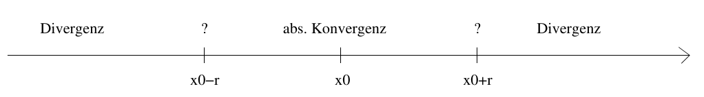 Visualisierung für reelle Potenzreihen
Konkret:
- \(r = 0 \Rightarrow\) Reihe konvergiert nur für \(x = x_0\)
- \(r = \infty \Rightarrow\) Reihe konvergiert für alle möglichen \(x\)
- Ansonsten:
- Konvergent für alle \(x\) mit \(|x - x_0| < r\)
- Divergent für alle \(x\) mit \(|x - x_0| > r\)
- Keine allgemeine Aussage über \(|x - x_0| = r\) möglich; manuell untersuchen
Anders formuliert: Die Reihe konvergiert absolut für alle \(x \in U_r(x_0)\)
- Identitätssatz
Gegeben eine Potenzreihe \(\sum_{n=0}^{\infty} a_n (x - x_0)^n =: f(x)\) die auf dem Bereich \(D = (x_0 - r, x_0 + r)\) konvergiert sowie eine Folge \((c_n)\) in \(D \setminus \{x_0\}\) mit \(c_n \to x_0\) und \(f(c_n) \to 0\).
Dann ist \(a_n = 0\) für alle \(n \in \mathbb{N}\), also konvergiert die Reihe in den ganzen reellen Zahlen und der Reihenwert ist immer 0.
- Beispiele
- Exponentialreihe: \(a_n = \frac{1}{n!}\), \(x_0 = 0\)
- Geometrische Reihe: \(a_n = 1\)
- Cosinus: \(a_{2n} = 0\), \(a_{2n + 1} = \frac{(-1)^n}{(2n)!}\), \(x_0 = 0\)
- Sinus: ähnlich zu cosinus, nur um 1 verschoben
4.1.4. Wichtige Beispiele
- Geometrische Reihe
Die Reihe \(\sum\limits_{n=0}^{\infty} x^n\) heißt geometrische Reihe (\(x \in \mathbb{R}\) ist eine Konstante).
- \(|x| \geq 1 \Rightarrow\) die Reihe divergiert
- \(|x| < 1 \Rightarrow\) die Reihe konvergiert - der Reihenwert ist \(\frac{1}{1 - x}\)
- Harmonische Reihe
\(\sum\limits_{n=1}^{\infty} \frac{1}{n}\) ist die harmonische Reihe. Sie divergiert.
- Teleskopsummen
Bei manchen Reihen kürzen sich fast alle Summanden raus und der Teilsummenausdruck lässt sich stark vereinfachen, sodass die Grenzwertbestimmung einfacher ist. Das nennt man Teleskopsummen.
Beispiel:
\[\sum\limits_{n=1}^{\infty} \frac{1}{n(n + 1)}\]
Der Ausdruck in der Reihe lässt sich mit Partialbruchzerlegung vereinfachen.
Nullstellen des Zählers berechnen (bereits faktorisiert): \(n(n + 1) = 0 \Rightarrow n = 0 \; \text{oder} \; n = -1\)
Ansatz für die Partialbruchzerlegung lösen:
\[\frac{1}{n(n + 1)} = \frac{A}{n} + \frac{B}{n + 1} \Leftrightarrow 1 = A (n + 1) + B n\]
Für \(n = 0\) erhält man \(A = 1\), für \(n = -1\) erhält man \(1 = -B \Leftrightarrow B = -1\).
Also gilt \(\frac{1}{n(n + 1)} = \frac{1}{n} - \frac{1}{n + 1}\)
\[a_n = \frac{1}{n(n + 1)} = \frac{1}{n} - \frac{1}{n + 1}\]
Daraus ergibt sich die Teilsummenfolge
\[s_n = a_1 + ... + a_n = (1 - \frac{1}{2}) + (\frac{1}{2} - \frac{1}{3}) + ... + (\frac{1}{n - 1} - \frac{1}{n}) + (\frac{1}{n} - \frac{1}{n + 1}) = 1 - \frac{1}{n + 1} \to 1\]
Alle außer dem ersten und letzten Summanden fallen weg und es wird ersichtlich, dass die Folge gegen 1 kovergiert, also ist der Reihenwert 1.
- 1/(na)
Gegeben die Reihe \(\sum_{n=1}^{\infty} \frac{1}{n^{\alpha}}\), wobei \(\alpha \in \mathbb{Q}\), \(\alpha > 0\), lässt sich sagen:
- \(\alpha \leq 1 \Rightarrow\) divergiert
- \(\alpha > 1 \Rightarrow\) konvergiert
4.1.5. Auf Konvergenz Untersuchen
Gegeben: \(\sum\limits_{n=1}^{\infty} a_n\) Gesucht: Konvergiert die Reihe? (Was ist der Reihenwert?)
- Konvergiert \((a_n)\) überhaupt gegen 0?
- Fällt die Reihe in ein bekanntes Muster?
- Potenzreihe
- geometrische Reihe
- harmonische Reihe
- Linearkombination aus bekannten Reihen
- Kann ich \((a_n)\) durch ein bekanntes/triviales Beispiel nach oben/unten abschätzen? (Majoranten-/Minorantenkriterium)
- Kann ich das Wurzel-/Quotientenkriterium anwenden?
- Ist die Reihe ein Cauchyprodukt?
- Kann ich den Ausdruck in der Reihe vereinfachen/umformen?
- Partialbruchzerlegung?
- Substitution?
- Schreibe die ersten Summanden der Reihe explizit auf und versuche Muster zu finden
- Teleskopsumme?
- Umordnung der Summanden?
- -> Grenzwert der Teilsummen
5. Grenzwerte von Funktionen
Der Grenzwert einer Funktion \(f : D \to \mathbb{R}^m\) (\(D \subseteq \mathbb{R}^n\)) in einem Punkt \(x_0 \in D\) ist der „Funktionswert“ (die Funktion muss an dieser Stelle nicht unbedingt definiert sein), an den man sich annähert, wenn man sich mit einer Folge von Eingangswerten \(x\) an \(x_0\) annähert (\(x \to x_0\)).
Die obige Beschreibung umfasst insbesondere die Fälle \(n = m = 1\) und \(m = 1\), mit welchen es idR einfacher ist umzugehen.
\[\lim\limits_{x \to x_0} f(x) = a \in \mathbb{R}^m\]
Diese Gleichung gilt genau dann, wenn für jede Folge \((x_n) \in D \setminus \{x_0\}\) mit \(x_n \to x_0\) auch \(f(x_n) \to a\) gilt.
In anderen Worten: Jede Folge von Eingangswerten, die gegen \(x_0\) konvergiert, nähert sich, eingesetzt in \(f\) auch an \(a\) an. Umgekehrt existiert der Grenzwert von \(f\) in \(x_0\) also, wenn \((f(x_n))\) für jede dieser Folgen konvergiert.
\(D = (0, 1]\)
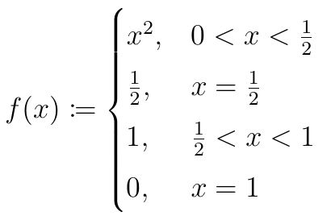
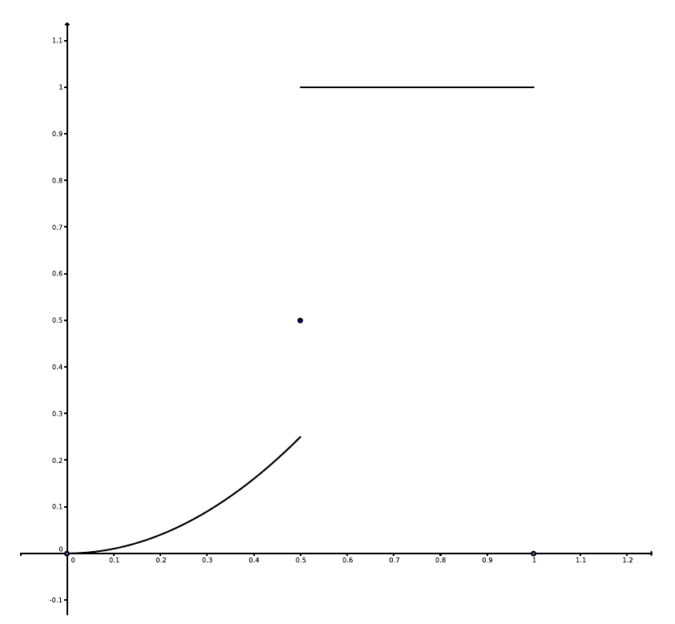
Betrachte Grenzwert in \(0\), \(\frac{1}{2}\) und \(1\).
- \(\lim_{x \to 0} f(x) = 0\)
- \(\lim_{x \to 1} f(x) = 1\)
- \(\lim_{x \to \frac{1}{2}} f(x)\) existiert nicht, da man unterschiedliche Folgen findet, die nach \(\frac{1}{2}\) konvergieren, aber eingesetzt in \(f\) bei unterschiedlichen Werten ankommen. Z.B. \(\frac{1}{2} - \frac{1}{n}\) („von links“) -> \(\frac{1}{4}\), \(\frac{1}{2} + \frac{1}{n}\) („von rechts“) -> \(1\).
Es gibt hier einen linksseitigen Grenzwert \(\lim\limits_{x \to \frac{1}{2}-} f(x) = \frac{1}{4}\) und einen rechtsseitigen Grenzwert \(\lim\limits_{x \to \frac{1}{2}+} f(x) = 1\).
5.1. Epsilon-Delta-Definition
Die Epsilon-Delta-Definition ist eine alternative Definition für den Grenzwert einer Funktion. Formal lautet sie:
\(\lim\limits_{x \to x_0} f(x) = a \Leftrightarrow \forall \epsilon > 0 \; \exists \delta > 0 \; \forall x \in D_{\delta}(x_0) : |f(x) - a| < \epsilon\)
Die Definition bedeutet im Prinzip: Für jedes noch so kleine \(\epsilon\) finde ich einen Radius \(\delta\) um \(x_0\), sodass der Abstand von \(a\) aller Funktionswerte in diesem Radius kleiner als \(\epsilon\) ist.
5.2. Eigenschaften und Kriterien
5.2.1. Cauchykriterium
Mit diesem Kriterium kann man beweisen, dass ein Grenzwert existiert/nicht existiert, ohne den Grenzwert/alle möglichen Grenzwerte zu kennen.
Der Grenzwert einer Funktion \(f : D \to \mathbb{R}^m\) in \(x_0\) existiert gdw.
\(\forall \epsilon > 0 \; \exists \delta > 0 \; \forall x_1, x_2 \in D_{\delta}(x_0) : |f(x_1) - f(x_2)| < \epsilon\)
In Worten: Für jedes noch so kleine \(\epsilon\) finde ich einen Radius \(\delta\) um \(x_0\), innerhalb dessen die Abstände aller zugehörigen Funktionswerte voneinander kleiner als \(\epsilon\) sind.
5.2.2. Kombinationen
Wie auch bei Folgen oder Reihen übertragen sich Kombinationen von Funktionen auf deren Grenzwerte:
Gegeben den Punkt \(x_0\) (Häufungspunkt von \(D\)), die Funktionen \(f, g : D \to \mathbb{R}^m\), die Grenzwerte \(a, b \in \mathbb{R}^m\) mit \(f(x) \to a, \; g(x) \to b \; (x \to x_0)\) und die Skalare \(\alpha, \beta \in \mathbb{R}\):
- \(\alpha f(x) + \beta g(x) \to \alpha a + \beta b\)
- \(f(x)g(x) \to ab\) (im Mehrdimensionalen: Skalarprodukt)
- \(|f(x)| \to |a|\)
- \(\frac{1}{f(x)} \to \frac{1}{a}\) (sofern sinnvoll, sprich \(f\) reellwertig, \(a > 0\) und auf einem Bereich um \(x_0\), auf dem \(f\) nicht 0 ist)
5.2.3. Sandwichkriterium
Wenn man eine Funktion \(f\) durch zwei Funktionen \(g\) und \(h\), die den gleichen Grenzwert \(a\) in \(x_0\) haben, in einer Umgebung um \(x_0\) nach oben und unten abschätzen kann, hat auch \(f\) den Grenzwert \(a\) in \(x_0\).
\(\lim\limits_{x \to x_0} g(x) = \lim\limits_{x \to x_0} h(x) = a\) und \(\exists \delta > 0 \; \forall x \in D_{\delta}(x_0) : g(x) \geq f(x) \geq h(x)\)
\(\Rightarrow f(x) \to a \; (x \to x_0)\)
(Direkt nur auf reellwertige Funktionen anwendbar)
5.2.4. Stetige Funktionen
Der Grenzwert einer stetigen Funktion \(f\) in \(x_0\) muss gleich \(f(x_0)\) sein, sofern definiert. Man kann in solchen Fällen einfach direkt \(x_0\) einsetzen, um den Grenzwert zu berechnen.
Z.B. \(f : (0, \infty) \to \mathbb{R}\) mit \(f(x) = e^x + x^4 + 2x + 5\): \(\lim_{x \to 0} f(x) = f(0) = 1 + 0 + 0 + 5 = 6\)
5.2.5. Regel von l’Hospital
Ein Grenzwert eines Quotienten von zwei Funktionen kann unter bestimmten Bedingungen über die Ableitungen der Funktionen berechnet werden.
Dafür muss der Grenzwert von dieser Form sein:
\[\lim\limits_{x \to c} \frac{f(x)}{g(x)}\]
Wobei
- \(c \in \mathbb{R} \cup \{-\infty, \infty\}\)
- \(f, g\) müssen über einem Intervall differenzierbar sein, von dem \(c\) eine Grenze ist (d.h.: Entweder in c differenzierbar oder auf \((c, x)\) bzw. \((x, c)\) differenzierbar)
- \(g'(x) \neq 0\) auf diesem Intervall
- \(\lim_{x \to c} f(x) = \lim_{x \to c} g(x) = 0\) oder \(\lim_{x \to c} g(x) = \pm \infty\)
Dann ist der obige Grenzwert einfach
\[\lim\limits_{x \to c} \frac{f'(x)}{g'(x)}\]
Die Regel kann man auch wiederholt anwenden.
Beispiele:
\[\lim\limits_{x \to \infty} \frac{\log x}{x} = \lim\limits_{x \to \infty} \frac{\frac{1}{x}}{1} = \lim\limits_{x \to \infty} \frac{1}{x} = 0\]
\[\lim\limits_{x \to 0} x \log x = \lim\limits_{x \to 0} \frac{\log x}{\frac{1}{x}} = \lim\limits_{x \to 0} \frac{\frac{1}{x}}{-\frac{1}{x^2}} = \lim\limits_{x \to 0} -\frac{x^2}{x} = \lim\limits_{x \to 0} -x = 0\]
5.3. Grenzwerte im Unendlichen
Man muss sich nicht nur auf die Grenzwertbetrachtung für einen Punkt \(x_0 \in D\) beschränken, sondern kann auch betrachten, wie sich eine Funktion ins Unendliche verhält.
\(\lim\limits_{x \to \infty} f(x)\) bzw. \(\lim\limits_{x \to -\infty} f(x)\)
Auch dort kann sie sich an eine Zahl \(a \in \mathbb{R}^m\) annähern.
Beispiel: Exponentialfunktion
\(\lim\limits_{x \to -\infty} e^x = 0\) und \(\lim\limits_{x \to \infty} e^x = \infty\) (dieser Grenzwert „existiert“ nicht, aber man kann es trotzdem so notieren)
5.4. Grenzwerte Berechnen
Gegeben: \(f : D \to \mathbb{R}^m\), \(x_0 \in D\) Gesucht: Grenzwert von \(f\) in \(x_0\)
- Ist die Funktion offensichtlich stetig?
- Ist sie an dem Punkt definiert? Dann \(f(x) \to f(x_0) \; (x \to x_0)\)
- Ist die Funktion eine Kombination von anderen?
- Regel von l’Hospital anwendbar?
5.4.1. In Höheren Dimensionen
Definitionsbereich: In höheren Dimensionen muss beachtet werden, dass die Grenzwerte ausgehend von allen Richtungen gleich sein müssen. (Für \(\mathbb{R} \to \mathbb{R}\) gibt es nur Grenzwerte „von links“ und „von rechts“, für mehr Eingabeparameter gibt es unendlich viele Richtungen)
Zielbereich: Vektorwertige Funktionen können einfach als ein Tupel von reellwertigen Funktionen gesehen werden.
\[f : D \to \mathbb{R}^m\] \[x = (x_1, ..., x_n) \in D\] \[f(x) = (f_1(x), ..., f_m(x))\]
Trick für 2 Eingangsdimensionen: Für den Fall \(x_0 = (0, 0)\) kann man [[*Polarkoordinaten][]] statt (x, y) benutzen. Das kann es leichter machen, weil dadurch z.B. der Winkel wegfällt und man sich nur noch mit einer Variable (\(r\)) annähern muss, oder wenn man den Term dadurch so vereinfachen kann, dass er im Falle einer stetigen Funktion am Grenzpunkt definiert ist. Dazu ein Beispiel im Drawer.
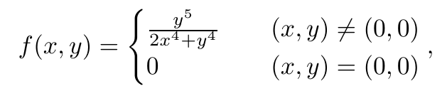
Aufgabe: Beweise \(\lim\limits_{(x, y) \to (0, 0)} f(x, y) = 0\)
Ersetze x und y durch die Polarkoordinaten: \[x = r \cos{\phi}\] \[y = r \sin{\phi}\]
Ziel: Da \(f\) außerhalb von \((0, 0)\) bereits offensichtlich stetig ist, können wir den Grenzwert berechnen, falls wir \((0, 0)\) direkt einsetzen. Aktuell ist dies allerdings noch undefiniert (Division durch 0), was wir jetzt mit den Polarkoordinaten versuchen zu eliminieren.
\(\phi\) ist an diesem Punkt noch komplett variabel.
\[\lim\limits_{(x, y) \to (0, 0)} f(x, y) = \lim\limits_{r \to 0} \frac{(r \sin{\phi})^5}{2 (r \cos{\phi})^4 + (r \sin{\phi})^4} = \lim\limits_{r \to 0} \frac{r^5 \sin^5(\phi)}{2 r^4 \cos^4(\phi) + r^4 \sin^4(\phi)} = \lim\limits_{r \to 0} \frac{r^5 \sin^5(\phi)}{r^4 (2 \cos^4(\phi) + \sin^4(\phi))} = \lim\limits_{r \to 0} \frac{r \sin^5(\phi)}{2 \cos^4(\phi) + \sin^4(\phi)}\]
Nun kann man einfach \(r\) einsetzen und erkennt, dass der Grenzwert in der Tat 0 ist.
Ansonsten:
- Die Definition (über Folgen) eignet sich gut zum Widerlegen der Existenz eines Grenzwerts
- Falls Grenzwert bekannt/vermutet: Epsilon-Delta
- Falls nur Existenzbeweis/-widerleg: Cauchykriterium
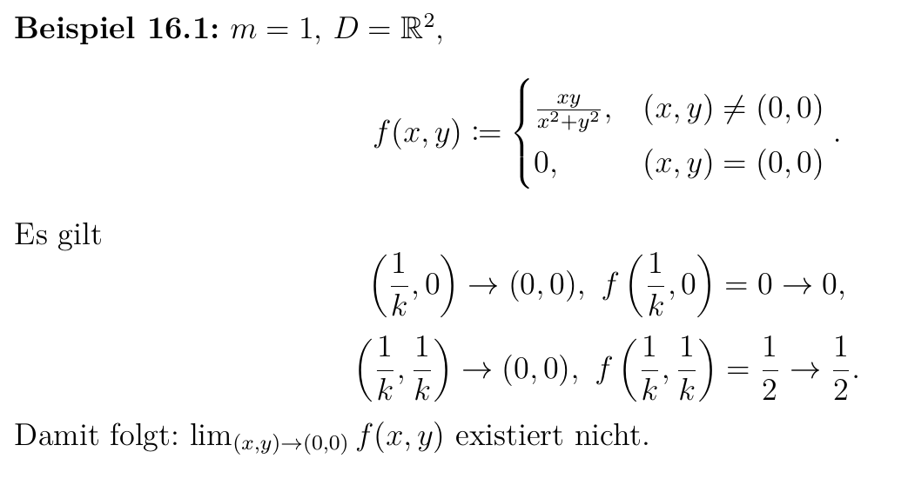 In diesem Beispiel sieht man, wie aus unterschiedlichen Richtungen unterschiedliche Grenzwerte entstehen und damit die Existenz eines allgemeinen Grenzwerts in \((0, 0)\) widerlegt ist.
6. Stetigkeit
Eine Funktion ist in \(x_0 \in D\) (\(D \subseteq \mathbb{R}^n\) ist wie zuvor der Definitionsbereich der Funktion) stetig, wenn für jede Folge \((x_n)\) mit \(x_n \to x_0\) auch \(f(x_n) \to f(x_0)\) gilt.
Anders formuliert: Der Wert, an den sich die Funktionswerte um \(x_0\) annähern, ist auch der tatsächliche Funktionswert an dieser Stelle.
\(f\) ist auf \(D\) stetig heißt \(f\) ist in jedem Punkt des Definitionsbereichs stetig.
\(C(D, \mathbb{R}^m)\) ist die Menge aller Funktionen \(D \to \mathbb{R}^m\), die stetig sind. Außerdem \(C(D) := C(D, \mathbb{R})\) (für reellwertige Funktionen).
Bildlich kann man sich Stetigkeit so vorstellen, dass die Funktion keine „Sprünge“ macht.
Zu sehen an diesem Beispiel:
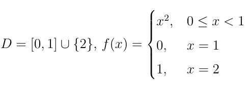
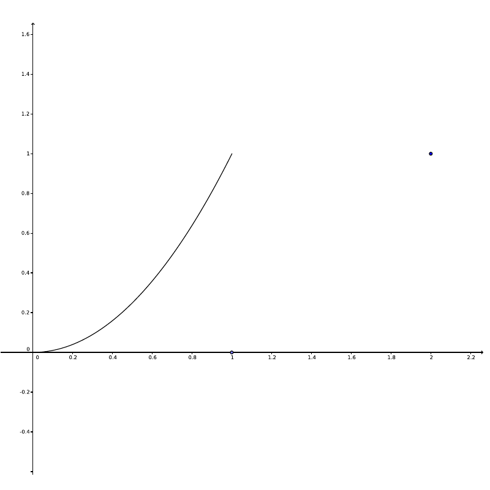
\(f\) ist in 1 und 2 nicht stetig. Das kann man am einfachsten mit der [[*Grenzwert-Definition][]] beweisen, wenn man weiß, dass \(x^2\) stetig ist:
\[\lim\limits_{x \to 1} f(x) = \lim\limits_{x \to 1} x^2 = 1^2 = 1 \neq 0 = f(1)\]
Oder über die Definition mit Folgen: \[x_n := 1 - \frac{1}{n} \Rightarrow x_n \to 1 \; (n \to \infty)\]
\((x_n)\) konvergiert gegen \(1\), aber
\[f(x_n) = x_n^2 = x_n \cdot x_n \to 1 \cdot 1 = 1 \neq 0 = f(1)\]
6.1. Epsilon-Delta-Definition
\(f\) ist stetig in \(x_0\), wenn sich die Funktionswerte um \(x_0\) an \(f(x_0)\) annähern.
\[\forall \epsilon > 0 \; \exists \delta > 0 \; \forall x \in D_{\delta}(x_0) : |f(x) - f(x_0)| < \epsilon\]
Die Definition bedeutet im Prinzip: Für jedes noch so kleine \(\epsilon\) finde ich einen Radius \(\delta\) um \(x_0\), sodass der Abstand zwischen allen Funktionswerten in diesem Radius und \(f(x_0)\) kleiner als \(\epsilon\) ist.
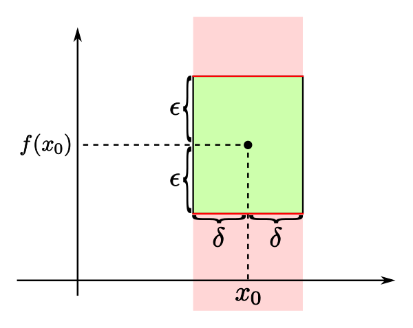
6.2. Grenzwert-Definition
Sofern \(\lim_{x \to x_0} f(x)\) definiert ist, muss dieser Grenzwert existieren und gleich \(f(x_0)\) sein, damit \(f\) stetig in \(x_0\) ist.
\[\lim\limits_{x \to x_0} f(x) = f(x_0)\]
6.3. Eigenschaften und Kriterien
6.3.1. Kombinationen
Verschiedene Kombinationen von stetigen Funktionen sind wieder stetig.
Gegeben: \(f, g : D \to \mathbb{R}^m\), \(h : D \to \mathbb{R}\) stetig, \(\alpha, \beta \in \mathbb{R}\)
Dann sind stetig:
- \(\alpha f + \beta g\)
- \(f \cdot g\) (im Höherdimensionalen Skalarprodukt)
- \(h \cdot f\)
- \(\frac{1}{h}\) (sofern definiert)
- \(|f|\)
6.3.2. Verkettungen
Die Verkettung zweier stetiger Funktionen ist ebenfalls stetig.
Gegeben: \[f : D \to \mathbb{R}^m\] \[g : E \to \mathbb{R}^p\] \[f(D) \subseteq E\]
Dann ist \(g \circ f\) stetig.
6.3.3. Potenzreihen-Funktionen
Funktionen, die durch Potenzreihen definiert, sind auf dem absoluten Konvergenzbereich um \(x_0\) der Potenzreihe stetig.
\[D := (x_0 - r, x_0 + r) \; \text{(Alle reellen Zahlen falls r unendlich)}\] \[f(x) := \sum\limits_{n=0}^{\infty} a_n (x - x_0)^n \; (x \in D)\]
\(f\) ist stetig auf \(D\) (\(f \in C(D)\)).
6.4. Wichtige Beispiele
Häufig gesehene stetige Funktionen:
- Alle Polynome
- Alle Exponentialfunktionen
- Gebrochene stetige Funktionen
- Die trigonometrischen Funktionen (\(\sin\), \(\cos\) etc.)
6.5. Stetigkeit Beweisen
- Potenzreihenfunktion?
- Bereiche identifizieren, die „offensichtlich“ stetig sind, d.h. die Kombinationen bekannter Beispiele sind
- Falls Bereiche übrig:
- Beweis oder Widerleg für einzelne Punkte mithilfe der Grenzwerteigenschaft (\(\lim_{x \to x_0} f(x) = f(x_0)\))
6.6. Zwischenwertsatz
Der Zwischenwertsatz besagt, dass man bei jeder stetigen Funktion 2 beliebige Punkte auf der x-Achse wählen kann und dass dann jeder Wert zwischen den beiden zugehörigen Funktionswerten auch als Funktionswert zwischen den beiden Punkten zu finden ist.
Formaler: Gegeben eine Funktion \((f : D \to \mathbb{R}) \in C(D)\) sowie zwei Punkte \(a, b \in D\) mit \(a < b\). Dann existiert für jedes \(y \in [\min\{f(a), f(b)\}, \max\{f(a), f(b)\}]\) (= jedes \(y\) zwischen \(f(a)\) und \(f(b)\)) ein \(x \in [a, b]\) mit \(f(x) = y\).
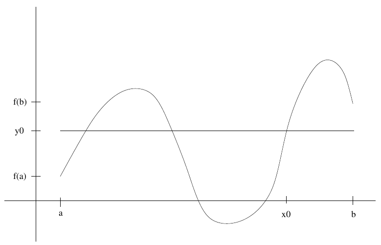 \(y_0\) ist zwischen \(f(a)\) und \(f(b)\), also findet man ein \(x_0\) mit \(f(x_0) = y_0\)
6.7. Nullstellensatz
Der Nullstellensatz ist eine Folgerung aus dem Zwischenwertsatz.
Gegeben eine Funktion \(f : D \to \mathbb{R}\) und \(a, b \in D\) wie zuvor: Wenn von \(f(a)\) und \(f(b)\) ein Wert negativ und der andere positiv ist, gibt es eine Nullstelle zwischen \(a\) und \(b\).
Formal: \[f(a)f(b) \leq 0 \Rightarrow \exists x_0 \in [a, b] : f(x_0) = 0\]
6.8. Gleichmäßige Stetigkeit
Gleichmäßige Stetigkeit ist eine stärkere Form der Stetigkeit. Anders als normale Stetigkeit ist sie nicht für einzelne Punkte definiert, sondern nur für den gesamten Definitionsbereich einer Funktion.
Eine Funktion \(f : D \to \mathbb{R}^m\) ist gleichmäßig stetig, genau dann, wenn für je zwei Folgen \((x_n), (y_n)\) in \(D\),
\[x_n - y_n \to 0 \Rightarrow f(x_n) - f(y_n) \to 0\]
6.8.1. Epsilon-Delta-Definition
In der Epsilon-Delta-Definition für gleichmäßige Stetigkeit darf, anders als bei normaler Stetigkeit, das \(\delta\) nicht von dem Punkt abhängen, den man untersucht.
\[\forall \epsilon > 0 \; \exists \delta > 0 \; \forall x, y \in D : |x - y| < \delta \Rightarrow |f(x) - f(y)| < \epsilon\]
Visuell kann man sich das vorstellen wie das „Rechteck“, dass man bei normaler Stetigkeit an einem bestimmten Punkt um die Funktion legen können muss. Bei gleichmäßiger Stetigkeit muss dieses Rechteck allerdings an jeder beliebigen Stelle der Funktion angelegt werden können, ohne seine größe zu verändern.
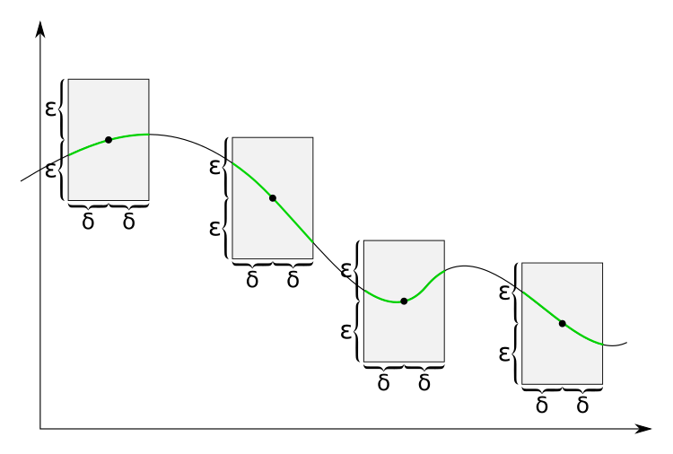 Gleichmäßig stetig; Rechteck grenzt den Graph an jedem Punkt ein
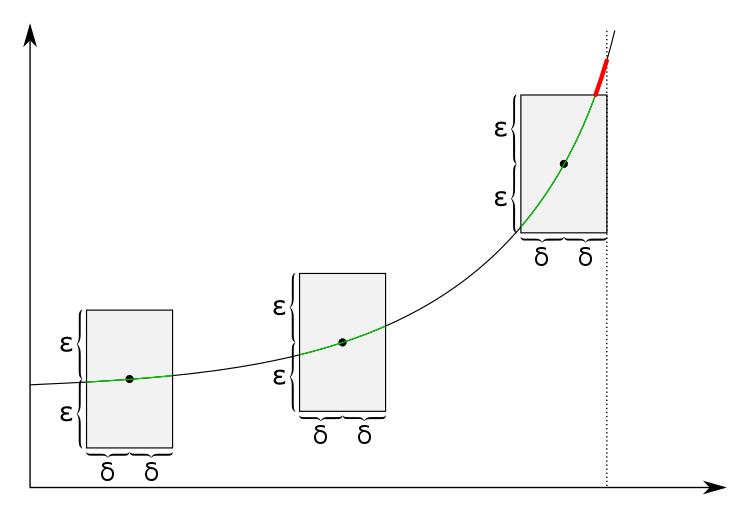 Nicht gleichmäßig stetig; Funktion (\(x^2\)) wächst immer schneller, kann nicht durch ein Rechteck eingegrenzt werden
6.8.2. Satz von Heine
Der Satz von Heine beschreibt ein hinreichendes Kriterium für die gleichmäßige Stetigkeit.
Wenn \(f : D \to \mathbb{R}\) stetig und \(D\) kompakt ist, ist \(f\) gleichmäßig stetig.
6.8.3. Gleichmäßige Stetigkeit Beweisen
- Ist die Definitionsmenge kompakt? -> Reguläre Stetigkeit beweisen (Satz von Heine)
- Widerlegen: Folgen \((x_n), (y_n)\) finden, die die Definition widerlegen
- Lipschitz-Stetigkeit versuchen als hinreichendes Kriterium zu verwenden
6.9. Lipschitz-Stetigkeit
Lipschitz-Stetigkeit ist eine stärkere Form der gleichmäßigen Stetigkeit. Die Definition ist:
\[\exists L \geq 0 \; \forall x, y \in D : |f(x) - f(y)| \leq L |x - y|\]
\(L\) ist hierbei also eine Konstante, die nicht von dem Punkt oder dem Abstand abhängen kann, den man betrachtet.
Lipschitz-Stetigkeit beweisen
- Wenn man \(L\) nicht kennt, kann man versuchen, \(|f(x) - f(y)|\) nach und nach nach oben abzuschätzen und zu vereinfachen, bis erkennbar wird, welche Konstante benötigt wird.
- Widerlegen: Gegenbeispiel \((x, y)\) für (jede) Konstante finden.
7. Funktionenfolgen
Funktionenfolgen sind, wie der Name bereits vermuten lässt, Folgen von Funktionen \((f_n)\), wobei jedes \(f_n : D \to \mathbb{R}\) (\(\emptyset \neq D \subseteq \mathbb{R}\)).
7.1. Punktweise Konvergenz
Eine Funktionenfolge ist auf \(D\) punktweise konvergent gdw. die Folge \((f_n(x))\) für jedes \(x \in D\) konvergent ist. D.h., wenn man ein \(x \in D\) in jede Funktion einsetzt, muss die entstehende Folge aus reellen Zahlen konvergieren.
Man kann dann eine Grenzfunktion definieren:
\[f(x) := \lim\limits_{n \to \infty} f_n(x)\]
Formal ist die Definition für punktweise Konvergenz von Funktionenfolgen also
\[\forall x \in D \; \forall \epsilon > 0 \; \exists n_0 \in \mathbb{N} \; \forall n \geq n_0 : |f_n(x) - f(x)| < \epsilon\]
Beispiel: Betrachte die Funktionenfolge \((f_n)\), wobei \(f_n(x) := x^n\), auf \(D = [0,1]\).
Für punktweise Konvergenz muss nun jedes \(x \in D\) betrachtet werden.
Fall 1: \(x \in [0,1)\). Aus den wichtigen Beispielen von Folgen wissen wir, dass \(x^n \to 0\).
Fall 2: \(x = 1\). Offensichtlich: \(x^n = 1^n \to 1\).
Also konvergiert \((f_n)\) gegen die Grenzfunktion
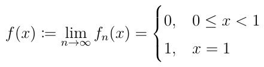
7.2. Gleichmäßige Konvergenz
\((f_n)\) konvergiert auf \(D\) gleichmäßig gegen \(f\) gdw.
\[\forall \epsilon > 0 \; \exists n_0 \in \mathbb{N} \; \forall n \geq n_0 \; \forall x \in D : |f_n(x) - f(x)| < \epsilon\]
Diese Definition ist sehr ähnlich zur punktweisen Konvergenz, nur dass das \(n_0\), ab dem die Bedingung gilt, nicht von \(x\) abhängen darf. D.h. für punktweise Konvergenz dürfen abhängig vom \(x\) „mehr“ Funktionen \(f_n\) von der Grenzfunktion abweichen und den Abstand \(\epsilon\) überschreiten, während bei glm. Konvergenz alle \(f_n\) ab einem \(n_0\) für jedes \(x\) innerhalb eines bestimmten Abstands von \(f\) verlaufen müssen.
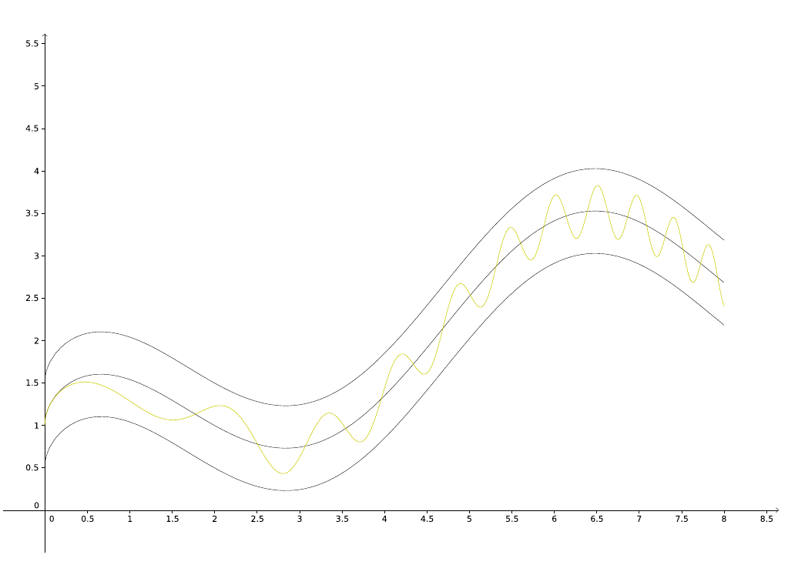
Hier visualisiert: der dunkle Graph in der Mitte ist der Graph der Grenzfunktion \(f\) der Funktionenfolge, die dunklen darüber und darunter sind \(f \pm \epsilon\). Der gelbe Graph ist der Graph eines \(f_n\) aus der Folge. Der gesamte Graph von \(f_n\) muss in diesem Schlauch verlaufen (selbiges für Funktionen nach \(f_n\) in der Folge).
Beispiel aus punktweiser Konvergenz:
\[f_n(x) = x^n \; (x \in [0, 1]), f(1) = 1, f(x) = 0 \; (x \in [0, 1))\]
Wähle ein \(\epsilon \in (0, \frac{1}{2})\). Sei \(n \in \mathbb{N}\). Betrachte \(x = \frac{1}{\sqrt[n]{2}}\). Dann gilt:
\[f_n(x) = (\frac{1}{\sqrt[n]{2}})^n = \frac{1}{2}, f(x) = 1\]
Allerdings ist \(|f_n(x) - f(x)| = |\frac{1}{2} - 1| = \frac{1}{2} > \epsilon\) und damit ist widerlegt, dass \((f_n)\) glm. konvergiert.
7.2.1. Nullfolgen-Kriterium
Ein hinreichendes Kriterium für glm. Konvergenz. Voraussetzungen:
- \((f_n)\) konvergiert auf \(D\) punktweise gegen \(f\)
- \((\alpha_n)\) ist eine Folge mit \(\alpha_n \to 0\)
- ffa \(n \in \mathbb{N}\) gilt: \(\forall x \in D : |f_n(x) - f(x)| \leq \alpha_n\)
Dann konvergiert \((f_n)\) gleichmäßig gegen \(f\).
7.2.2. Differentialkriterium
Wenn die folgenden Dinge für eine Funktionenfolge \((f_n)\) gegeben sind:
- \(\forall n \in \mathbb{N} : f_n \in C^1([a, b])\)
- \((f_n(a))\) (reelle Folge) ist konvergent
- \((f_n')\) konvergiert auf \([a, b]\) gleichmäßig gegen \(g : [a, b] \to \mathbb{R}\)
Dann konvergiert \((f_n)\) auf \([a,b]\) gleichmäßig gegen \(f(x) = \lim_{n \to \infty} f_n(x)\) und
- \(f \in C^1([a,b])\)
- \(f'(x) = g(x)\)
Also in Worten: Wenn alle Funktionen in der Folge [[*Stetige Differenzierbarkeit][stetig differenzierbar] auf einem Intervall \([a,b]\) sind, die Folge für \(a\) eingesetzt konvergiert und die Folge der Ableitungen gleichmäßig konvergiert, konvergiert die ursprüngliche Folge gleichmäßig.
Siehe Differentialrechnung.
7.2.3. Stetigkeit
Aus gleichmäßiger Konvergenz von \((f_n)\) gegen \(f\) und Stetigkeit von jedem \(f_n\) folgt Stetigkeit von \(f\) (in jeweils einem Punkt \(x_0 \in D\))
Folglich: Wenn \(f_n \to f\) (punktweise) und alle \(f_n\) stetig sind, aber \(f\) nicht stetig ist, ist \((f_n)\) nicht glm. konvergent.
8. Funktionenreihen
Funktionenreihen sind für Funktionenfolgen, was normale Reihen für normale Folgen sind.
Gegeben ist eine Funktionenfolge \((f_n)\) (jeweils \(D \to \mathbb{R}\)). Damit definiert man sich nun eine Folge von Partialsummenfunktionen:
\[s_n := \sum\limits_{k=1}^n f_k = f_1 + f_2 + ... + f_n\]
Sowie die Funktionenreihe:
\[\sum\limits_{n=1}^{\infty} f_n\]
Wie schon bei normalen Reihen gilt wieder: Der erste Summand muss nicht \(n=1\) sein, sondern es kann woanders anfangen.
8.1. Punktweise Konvergenz
Eine Funktionenreihe ist auf \(D\) punktweise konvergent gdw. die Folge \((s_n(x))\) für jedes \(x \in D\) konvergent ist. Dies ist analog zur Definition von punktweiser Konvergenz von Funktionenfolgen.
Zur Bestimmung hierfür lassen sich die aus Reihen bekannten Kriterien anwenden.
Dann kann man eine Summenfunktion definieren:
\[f(x) := \sum\limits_{n=1}^{\infty} f_n(x)\]
8.2. Gleichmäßige Konvergenz
Gleichmäßige Konvergenz von Funktionenreihen ist analog zur Definition glm. Konvergenz von Funktionenfolgen mit \((s_n(x))\) als Folge.
\[\forall \epsilon > 0 \; \exists n_0 \in \mathbb{N} \; \forall n \geq n_0 \; \forall x \in D : |s_n(x) - f(x)| < \epsilon\]
8.2.1. Kriterium von Weierstraß
Ein hinreichendes Kriterium für glm. Konvergenz von Funktionenreihen. Voraussetzungen:
- Eine Folge \((c_n)\) (mit \(c_n \to 0\))
- \(\sum_{n=1}^{\infty} c_n\) konvergiert
- \(|f_n(x)| \leq c_n\) für alle \(x \in D\) und ffa \(n \in \mathbb{N}\)
Dann konvergiert \(\sum_{n=1}^{\infty} f_n\) auf \(D\) gleichmäßig.
8.3. Beispiele
8.3.1. Potenzreihen
Potenzreihen sind Funktionenreihen, wobei die auf dem Konvergenzbereich (\(D = (x_0 - r, x_0 + r)\)) definierte Summenfunktion die Reihenwerte annimmt.
Die Potenzreihe \(\sum_{n=0}^{\infty} a_n (x - x_0)^n\) kann als Funktionenreihe \(\sum_{n=0}^{\infty} f_n\) gesehen werden, wobei \(f_n(x) := a_n (x - x_0)^n\).
Die Summenfunktion, wogegen die Reihe punktweise konvergiert, ist dann
\[f(x) := \sum\limits_{n=0}^{\infty} a_n (x - x_0)^n\]
Jede Potenzreihe konvergiert auch gleichmäßig auf dem absoluten Konvergenzbereich \(D\) (s.o.).
8.3.2. Geometrische Reihe
Die Geometrische Reihe \(\sum_{n=1}^{\infty} x^n\) (hier nur betrachtet auf \(D = (-1, 1)\), also für \(|x| < 1\)) konvergiert punktweise gegen die Summenfunktion
\[f(x) = \frac{1}{1 - x}\]
Das ist der bekannte Reihenwert für \(|x| < 1\).
Die Reihe konvergiert jedoch nicht gleichmäßig gegen \(f\). Beweis:
Angenommen, sie konvergiert glm. Per Definition gilt also
\[|s_n(x) - f(x)| < 1\]
ffa \(n \in \mathbb{N}\) (\(\epsilon = 1\)). Aber dieser Ausdruck geht gegen \(\infty\) für \(n \to \infty\) und \(x \to 1-\), also kann das nicht stimmen:
\[|s_n(x) - f(x)| = \frac{{|x|}^{n+1}}{1 - x} \to \infty \; (n \to \infty, x \to 1-)\]
9. Differentialrechnung
9.1. Reelle Funktionen
\(f : I \to \mathbb{R}\) (\(I \subseteq \mathbb{R}\) ein Intervall) ist differenzierbar in \(x_0\) bedeutet, dass die Ableitung \(f'\) von \(f\) in \(x_0\) existiert, welche wie folgt definiert ist:
\[f'(x_0) := \lim\limits_{x \to x_0} \frac{f(x) - f(x_0)}{x - x_0}\]
Den Ausdruck rechts nennt man den Differenzquotient.
Beispiel: \(f(x) = |x|\)
\[\lim\limits_{x \to 0-} \frac{f(x) - f(0)}{x - 0} = \lim\limits_{x \to 0} \frac{|x|}{x} = -1\]
Aber
\[\lim\limits_{x \to 0+} \frac{|x|}{x} = 1\],
also existiert der Grenzwert nicht für \(x_0 = 0\) und \(f\) ist in \(0\) nicht differenzierbar.
Aus Differenzierbarkeit folgt außerdem Stetigkeit.
9.1.1. h-Methode
Den Differenzenquotienten kann man auch durch Substitution von \(x - x_0\) berechnen:
\[f'(x_0) = \lim\limits_{h \to 0} \frac{f(x + h) - f(x_0)}{h}\]
Das ist bekannt als die h-Methode.
9.1.2. Ableitungsregeln
In diesem Abschnitt seien \(f, g\) 2 differenzierbare Funktionen.
- Linearkombinationen
Für \(\alpha, \beta \in \mathbb{R}\) ist \((\alpha f + \beta g)'(x) = \alpha f'(x) + \beta g'(x)\).
- Produktregel
\[(fg)'(x) = f'(x)g(x) + f(x)g'(x)\]
- Quotientenregel
\[(\frac{f}{g})'(x) = \frac{f'(x)g(x) - f(x)g'(x)}{g(x)^2}\]
- Umkehrfunktionen
Wenn \(f\) auch noch streng monoton und überall stetig ist (\(\in C(I)\)), dann kann man die Ableitung in \(y = f(x)\) der Umkehrfunktion wie folgt berechnen:
\[(f^{-1})'(y) = \frac{1}{f'(x)} = \frac{1}{f'(f^{-1}(y))}\]
- Kettenregel
Sofern \(f\) und \(g\) verkettet werden können (\(f : I \to \mathbb{R}, g : J \to \mathbb{R}\) mit \(f(I) \subseteq J\) und Differenzierbarkeit in \(x\) (f) und \(f(x)\) (g)):
\[(g \circ f)'(x) = g'(f(x))f'(x)\]
- Wichtige Beispiele
- \(\log'(x) = \frac{1}{x}\) (Logarithmus)
- \(\sin'(x) = \cos x\) (Cosinus)
- \(\cos'(x) = - \sin x\) (Sinus)
- \(\tan'(x) = \frac{1}{\cos^2(x)}\) und \(\arctan'(x) = \frac{1}{1 + x^2}\) (Tangens)
- \(f(x) = x^n \Rightarrow f'(x) = n x^{n-1}\) (Polynome)
- \(f(x) = e^x \Rightarrow f'(x) = e^x\) (Exponentialfunktion)
- \(f(x) = c \in \mathbb{R} \Rightarrow f'(x) = 0\) (konstante Funktionen)
9.1.3. Mehrfach Ableiten
Man kann \(n \in \mathbb{N}\) mal ableiten, in dem man immer weiter die Ableitungen der Ableitungen bildet. Wenn das geht, ist \(f\) \(n\) mal differenzierbar und \(f^{(n)}\) ist die $n$-te Ableitung von \(f\). Bis zur 3. Ableitung schreibt man auch \(f''\) bzw. \(f'''\).
9.1.4. Stetige Differenzierbarkeit
Wenn die $n$-te Ableitung einer Funktion existiert und stetig ist, dann ist die Funktion \(n\) mal stetig differenzierbar. Die Menge aller \(n\) mal stetig differenzierbaren Funktionen über \(I\) ist \(C^n(I)\). \(C^{\infty}(I)\) ist die Menge aller Funktionen, die man beliebig oft stetig ableiten kann.
Beispiele: Exponentialfunktion, Sinus, Cosinus.
9.1.5. Mittelwertsatz
Gegeben eine auf \([a, b]\) stetige und auf \((a, b)\) differenzierbare Funktion \(f\):
\[\exists \xi \in (a, b) : \frac{f(b) - f(a)}{b - a} = f'(\xi)\]
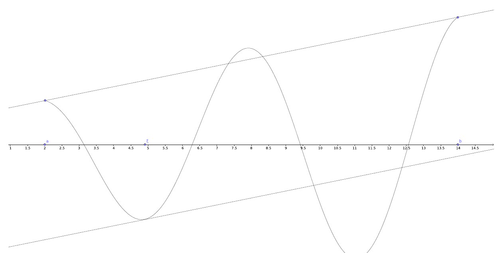
\(\frac{f(b) - f(a)}{b - a}\) ist die mittlere Steigung von \(f\) zwischen \(a\) und \(b\) - Der Satz sagt also, dass bei jeder differenzierbaren Funktion zwischen je 2 Punkten die Ableitung an einer Stelle den Wert der mittleren Steigung zwischen den Punkten annimmt.
9.1.6. Satz von Taylor
- \(n \in \mathbb{N}_0\)
- \(f\) auf \(I\) \((n + 1)\) mal diffbar
- \(x, x_0 \in I\) mit \(x \neq x_0\)
Dann existiert ein \(\xi \in (\min\{x, x_0\}, \max\{x, x_0\})\) mit
\[f(x) = \sum\limits_{k=0}^{n} \frac{f^{(k)}(x_0)}{k!} (x - x_0)^k + \frac{f^{(n + 1)}(\xi)}{(n + 1)!} (x - x_0)^{n + 1}\]
also
\[f(x) = f(x_0) + f'(x_0) (x - x_0) + \frac{f''(x_0)}{2!} (x - x_0)^2 + ... + \frac{f^{(n)}(x_0)}{n!} (x - x_0)^n + \frac{f^{(n + 1)}(\xi)}{(n + 1)!} (x - x_0)^{n + 1}\]
- Taylorpolynom
Die Summanden von \(0\) bis \(n\) aus dem Satz oben heißen \(n\) tes Taylorpolynom von \(f\) in \(x\).
\[T_nf(x, x_0) = \sum\limits_{k=0}^{n} \frac{f^{(k)}(x_0)}{k!} (x - x_0)^k\]
Der letzte Summand heißt Restglied.
\[\frac{f^{(n + 1)}(\xi)}{(n + 1)!} (x - x_0)^{n + 1}\]
Man kann sich also über die Ableitungen einer Funktion von einem beliebigen Punkt aus an einen anderen über das Taylorpolynom „annähern“ und mit dem Restglied den tatsächlichen Funktionswert erhalten.
9.1.7. Extrema
Über Ableitungen lassen sich die Extrempunkte einer Funktion bestimmen. Hierzu sind 2 Kriterien wichtig:
- \(f\) hat in \(x\) ein lokales Extremum \(\Rightarrow f'(x) = 0\) (notwendig)
- \(f'(x) = f''(x) = \dots = f^{(n - 1)}(x) = 0\) und \(f^{(n)}(x) \neq 0 \Rightarrow \text{(i)}\) (hinreichend)
(i)
- \(n\) gerade und \(f^{(n)}(x) > 0\): lokales Minimum
- \(n\) gerade und \(f^{(n)}(x) < 0\): lokales Maximum
- \(n\) ungerade: kein lokales Extremum in \(x\)
In Worten heißt das: Wenn ungerade viele Ableitungen von \(f\) hintereinander in \(x\) 0 sind und dann die nächste Ableitung nicht 0 ist, gibt es ein lokales Extremum in \(x\).
9.1.8. Weitere Eigenschaften
Aus der Ableitung kann man Schlüsse über die Monotonie einer Funktion ziehen.
- \(f'(x) \leq 0 \Rightarrow f\) monoton fallend
- \(f'(x) \geq 0 \Rightarrow f\) monoton wachsend
- Analog mit </> und strenger Monotonie
Wenn 2 Ableitungen gleich sind, unterscheiden sich die Funktionen nur durch eine Konstante.
\[f' = g' \Rightarrow f(x) = g(x) + c \; (c \in \mathbb{R})\]
9.2. Mehrdimensional, Reellwertig
Differenzierbarkeit lässt sich auch für Funktionen mit mehreren Eingabeparametern definieren. Wie bei Stetigkeit: Betrachten von Funktionen \(f : D \to \mathbb{R}\), wobei \(D \subseteq \mathbb{R}^n\) und offen.
9.2.1. Partielle Differenzierbarkeit
Man kann mehrdimensionale Funktionen wie einfache Funktionen nach differenzieren, in dem nach einem bestimmten Parameter differenziert und die anderen so festhält, als seien sie Konstanten.
Z.B. die Funktion \(f : \mathbb{R}^2 \to \mathbb{R}\):
\[f(x, y) = 2xy^2\]
Kann man nach x oder nach y differenzieren:
\[f_x(x, y) = 2y^2\] \[f_y(x, y) = 4xy\]
Formal ist die partielle Ableitung von \(f\) in \(x_0 \in D\) nach \(x_i\) definiert als:
\[f_{x_i}(x_0) = \frac{\partial f}{\partial x_i}(x_0) = \lim\limits_{t \to 0} \frac{f(x_0 + te_i) - f(x_0)}{t}\],
wobei \(e_i\) der $i$-te Einheitsvektor (an Stelle \(i\) eine 1, sonst 0) ist. Das ist die h-Methode, nur für höhere Dimensionen.
Die folgenden Bezeichnung sind naheliegend:
- \(f\) partiell differenzierbar = \(f\) partiell differenzierbar nach allen Parametern \(x_i\)
- Dann existiert der Gradient: \(\text{grad} \; f(x_0) = (f_{x_1}(x_0), \dots , f_{x_n}(x_0))\)
- \(f\) stetig partiell differenzierbar = \(f\) partiell differenzierbar und alle partiellen Ableitungen stetig
- \(m\) mal stetig partiell differenzierbar = s.u. (\(C^m(D, \mathbb{R})\))
- \(f_{x_i}\) auf D vorhanden = \(f\) ist in jedem \(x \in D\) nach \(x_i\) partiell differenzierbar
- Mehrfach Partiell Ableiten
Genauso kann man partielle Ableitungen, sofern definiert, wieder partiell ableiten:
\[\frac{\partial^3 f}{\partial y \partial x^2} = f_{xxy}, \; \frac{\partial^7 f}{\partial y^4 \partial x^3} = f_{yyyyxxx}, \; \text{etc.}\]
Bei stetig partiell differenzierbaren Funktionen ist die Reihenfolge der Ableitungen hierbei egal (Satz von Schwarz).
9.2.2. Differenzierbarkeit
Auch für höhere Dimensionen gibt es den Begriff der Differenzierbarkeit. Die Definition lässt sich aus der h-Methode herleiten:
\[\exists a \in \mathbb{R} : \lim\limits_{h \to 0} \frac{g(x_0 + h) - g(x_0)}{h} = a \Leftrightarrow \exists a \in \mathbb{R} : \lim\limits_{h \to 0} \frac{g(x_0 + h) - g(x_0) - ah}{|h|} = 0\]
Diese Definition lässt sich nun direkt auf höhere Dimensionen übertragen:
\[\exists a \in \mathbb{R}^n : \lim\limits_{h \to 0} \frac{f(x_0 + h) - f(x_0) - a \cdot h}{|h|} = \lim\limits_{x \to \x_0} \frac{f(x) - f(x_0) - a \cdot (x - x_0)}{|x - x_0|} = 0\]
(Das \(h\) ist hier \(\in \mathbb{R}^n\), \(\cdot\) ist das Skalarprodukt der Vektoren und || der Betrag/die Länge)
- Beziehung zu Partieller Differenzierbarkeit
Differenzierbare Funktionen sind stetig und partiell differenzierbar.
Die Ableitung einer differenzierbaren Funktion \(f\) in \(x_0\) (s. \(a\) in der Definition) ist \(f'(x_0) = \text{grad } f(x_0)\).
Dies kann man entsprechend in die Definition einsetzen und man erhält ein Äquivalenzkriterium.
\[\lim\limits_{h \to 0} \frac{f(x_0 + h) - f(x_0) - \text{grad } f(x_0) \cdot h}{|h|} = 0\]
D.h.: partiell diffbar und obiger Grenzwert ist 0 => diffbar
Ein anderes, hinreichendes Kriterium: Wenn \(f\) stetig partiell differenzierbar ist, folgt direkt, dass \(f\) differenzierbar ist.
- Kettenregel
Gegeben \(f : D \to \mathbb{R}\), \(g : I \to \mathbb{R}^n\) wobei \(g(I) \subseteq D\).
Betrachte einen Punkt \(t_0 \in I\). Wenn \(g\) in \(t_0\) und \(f\) in \(g(t_0)\) differenzierbar ist, dann ist \(f \circ g\) in \(t_0\) differenzierbar:
\[(f \circ g)'(t_0) = f'(g(t_0)) \cdot g'(t_0)\]
(Wie die normale Kettenregel, nur mit Skalarprodukt).
- Mittelwertsatz
Gegeben: auf \(D\) diffbare Funktion \(f : D \to \mathbb{R}\) und 2 Punkte \(a, b \in D\) deren Verbindungsstrecke \(S[a, b] \subseteq D\).
Dann existiert ein \(\xi \in S[a, b]\) mit
\[f(b) - f(a) = f'(\xi) \cdot (b - a)\]
9.2.3. Richtungsableitung
Gegeben ein Richtungsvektor \(a \in \mathbb{R}^m\) mit \(|a| = 1\), kann man die Differenzierbarkeit einer Funktion in \(x_0 \in D\) in Richtung \(a\) untersuchen.
\[\frac{\partial f}{\partial a}(x_0) = \lim\limits_{t \to 0} \frac{f(x_0 + ta) - f(x_0)}{t} \in \mathbb{R}\]
Das ist wie die Definition von partieller Differenzierbarkeit, nur mit beliebigen Richtungen statt nur der Einheitsvektoren.
Wenn \(f\) in \(x_0\) differenzierbar ist, ist
\[\frac{\partial f}{\partial a}(x_0) = a \cdot \text{grad } f(x_0)\]
9.2.4. Hesse-Matrix
Gegeben \(f \in C^2(D, \mathbb{R})\) und \(x_0 \in D\) kann man sich die Hesse-Matrix erstellen. Die Hesse-Matrix ist so etwas wie „2. partielle Ableitung“ der Funktion \(f\).
\begin{equation} H_f(x_0) = \begin{pmatrix} f_{x_1x_1}(x_0) & f_{x_1x_2}(x_0) & \dots & f_{x_1x_n}(x_0)\\ \vdots & & & \vdots\\ f_{x_nx_1}(x_0) & f_{x_nx_2}(x_0) & \dots & f_{x_nx_n}(x_0) \end{pmatrix} = \begin{pmatrix}\text{grad } f_{x_1}(x_0)\\ \vdots \\ \text{grad } f_{x_n}(x_0)\end{pmatrix} \end{equation}Sie ist symmetrisch wegen des Satzes von Schwarz (Reihenfolge der partiellen Ableitungen ist egal).
- Definitheit
- Matrix positiv definit \(\Leftrightarrow\) alle Eigenwerte > 0
- Matrix negativ definit \(\Leftrightarrow\) alle Eigenwerte < 0
- Matrix indefinit \(\Leftrightarrow\) Es gibt Eigenwerte < 0 und > 0
Für \(2 \times 2\) Matrizen außerdem:
- positiv definit \(\Leftrightarrow\) \(M_{1,1}\) > 0, \(\det M > 0\)
- negativ definit \(\Leftrightarrow\) \(M_{1,1}\) < 0, \(\det M > 0\)
- indefinit \(\Leftrightarrow \det M < 0\)
- Extrema
Lokales Maximum/Minimum in \(x_0\) heißt wie im reellen auch, dass die Funktionswerte von \(f : D \to \mahthbb{R}\) um \(x_0\) in einem Radius \(\delta\) alle \(\leq \text{ bzw. } \geq f(x_0)\) sind.
Hier formal für lokale Maxima:
\[\exists \delta > 0 \; \forall x \in U_{\delta}(x_0) \cap D : f(x) \leq f(x_0)\]
Globale Extrema wiederum beziehen sich auf den ganzen Definitionsbereich (hier wieder am Beispiel Maximum):
\[\forall x \in D : f(x) \leq f(x_0)\]
9.3. Mehrdimensional, Vektorwertig
Wie auch schon früher betrachtet man vektorwertige Funktionen (also z.B. \(f : \mathbb{R}^2 \to \mathbb{R}^3\)) im Grunde als ein Tupel von reellwertigen Funktionen (\(f = (f_1, f_2, f_3)\)).
9.3.1. Partielle Differenzierbarkeit
\(f : D \to \mathbb{R}^m\) (\(D \in \mathbb{R}^n\)) partiell differenzierbar \(\Leftrightarrow\) alle \(f_i\) partiell differenzierbar. Das Äquivalent zum Gradienten ist hier die Jacobi- oder Funktionalmatrix:
\[\frac{\partial f}{\partial x}(x_0) = \frac{\partial (f_1, \dots , f_m)}{\partial (x_1, \dots , x_n)}(x_0) = J_f(x_0) = \begin{pmatrix}\frac{\partial f_1}{\partial x_1}(x_0) & \dots & \frac{\partial f_1}{\partial x_n}(x_0) \\ \vdots & & \vdots \\ \frac{\partial f_m}{\partial x_1}(x_0) & \dots & \frac{\partial f_m}{\partial x_n}(x_0) \end{pmatrix} = \begin{pmatrix}\text{grad } f_1(x_0) \\ \vdots \\ \text{grad } f_m(x_0)\end{pmatrix} \in \mathbb{R}^{m \times n}\]
Analog stetig partielle Differenzierbarkeit: \(f \in C^p(D, \mathbb{R}^m) \Leftrightarrow \forall i : f_i \in C^p(D, \mathbb{R})\)
9.3.2. Differenzierbarkeit
\(f : D \to \mathbb{R}^m\) differenzierbar \(\Leftrightarrow \forall i : f_i\) differenzierbar. Zur Erinnerung: Damit ist es auch ein hinreichendes Kriterium, dass alle \(f_i\) stetig partiell differenzierbar sind.
Daraus folgt wieder
- \(f\) partiell differenzierbar
- \(f\) stetig
- Ableitung von \(f\) in \(x_0\) = \(J_f(x_0)\) (analog zum Gradienten)
Die formale Definition ist auch ähnlich, nur mit einer \(m \times n\) Matrix \(A\) als Ableitung:
\[\lim\limits_{h \to 0} \frac{f(x_0 + h) - f(x_0) - Ah}{|h|} = 0\]
- Kettenregel
Auch für vektorwertige Funktionen kann man die Kettenregel definieren.
Gegeben: \(f : D \to \mathbb{R}^m\) differenzierbar in \(x_0 \in D\), \(\tilde{D} \subseteq \mathbb{R}^m\) offen, \(f(D) \subseteq \tilde{D}\) und \(g : \tilde{D} \to \mathbb{R}^p\) differenzierbar in \(f(x_0)\).
\[(g \circ f)'(x_0) = g'(f(x_0)) \cdot f'(x_0) = J_g(f(x_0)) \cdot J_f(x_0)\]
\(J_g\) ist eine \(p \times m\) Matrix, \(J_f\) eine \(m \times n\) Matrix, also ist die Ableitung der Verkettung eine \(p \times n\) Matrix.
9.4. Implizit Definierte Funktionen
Wenn man eine Gleichung der Form \(f(x, y) = 0\) gegeben hat, kann man dies auch schreiben als \(f(x, g(x)) = 0\). Die Idee: Um die Gleichung zu erfüllen, muss \(y\) im Allgemeinen abhängig von \(x\) sein. Wenn sich also \(x\) ändert, muss \(y\) darauf „reagieren“, um noch die Gleichung zu erfüllen. Daher kann man \(y\) als eine implizit definierte Funktion \(g : (- \delta, \delta) \to (1 - \eta, 1 + \eta)\) sehen.
\[f(x, g(x)) = 0\]
Hier kann man nun mit der Kettenregel differenzieren: Betrachte das „Innere“ von \(f\) als Funktion \(p(x) = (x, g(x))\), d.h. wir betrachten insgesamt \((f \circ p)(x) = 0\).
\begin{align} (f \circ p)'(x) &= f'(p(x)) p'(x) \\ &= (\text{grad } f(p(x))) J_p(x) \\ &= (f_x(p(x)), f_y(p(x))) \begin{pmatrix} x' \\ g'(x) \end{pmatrix} \\ &= f_x(p(x)) x' + f_y(p(x)) g'(x) \\ &= f_x(x, g(x)) + f_y(x, g(x)) g'(x) \end{align}Man erhält also
\[f_x(x, g(x)) + f_y(x, g(x)) g'(x) = 0 \Leftrightarrow g'(x) = - \frac{f_x(x, g(x))}{f_y(x, g(x))}\]
10. Integralrechnung
Man betrachtet ein Intervall \([a,b]\) und dann Zerlegungen \((x_0, x_1, \dots , x_n)\) (\(a = x_0 \leq x_1 \leq \dots \leq x_n = b\)) dieses Intervalls. Diese Zerlegungen bestehen dann aus \(n - 1\) Teilintervallen, für die man sich jeweils den größten und kleinsten Funktionswert (\(\sup f(I)\) und \(\inf f(I)\)) anschauen kann. Dies kann man dann in den Funktionsgraphen einzeichnen:
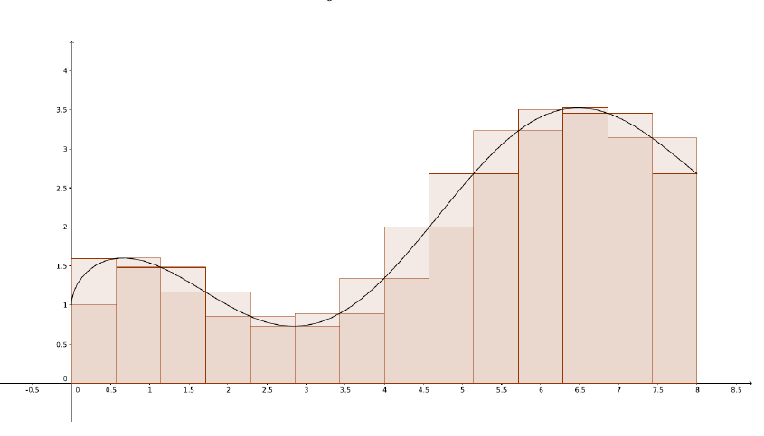
Die Summe über die Suprema der Funktionswerte in den Intervallen ist die Obersumme, die Summe über die Infima die Untersumme.
Eine Funktion \(f\) ist nun integrierbar über \([a,b]\) gdw. sich diese beiden Summen für immer feinere Zerlegungen immer weiter aneinander annähern.
10.1. Kriterien
- Monotone Funktionen \(f : [a,b] \to \mathbb{R}\) sind integrierbar \(\in R([a, b])\).
- Stetige Funktionen und Funktionen, die nur in endlich vielen Punkten unstetig sind, sind integrierbar (\(C([a,b]) \subseteq R([a,b])\))
- Integrierbarkeit lässt sich „Zerteilen“: \(f \in R([a,c]) \Leftrightarrow f \in R([a,b]) \text{ und } f \in R([b,c])\) (wenn \(b \in (a, c)\))
10.2. Unbestimmte Integrale
Eine Stammfunktion \(F : [a, b] \to \mathbb{R}\) von \(f : [a, b] \to \mathbb{R}\) ist eine differenzierbare Funktion, für die gilt:
\[\forall x \in [a, b] : F'(x) = f(x)\]
Man schreibt das auch als unbestimmtes Integral:
\[\int fdx = \int f(x)dx\]
Die Stammfunktion ist niemals eindeutig, da man beliebige konstante Summanden hinzufügen kann, z.B. ist sowohl \(\sin x\) als auch \(\sin(x) + 17\) eine Stammfunktion von \(\cos x\).
10.3. Integrationsregeln
10.3.1. Erster Hauptsatz
\(f \in R([a,b])\) und \(F\) Stammfunktion von \(f\):
\[\int_a^b f(x) dx = [F(x)]_a^b = F(b) - F(a)\]
10.3.2. Zweiter Hauptsatz
Gegeben \(f \in R([a,b])\):
\[F(x) := \int_a^x f(t) dt \; \; (x \in [a,b])\]
Diese Funktion hat die folgenden Eigenschaften:
- \(\int_a^b f(t) dt = [F(x)]_a^b\)
- \(F\) ist Lipschitz-stetig
- Wenn \(f\) stetig ist, ist \(F\) eine Stammfunktion von \(f\) (\(F'(x) = f(x)\))
10.3.3. Funktionenfolgen
Folgen von Integralen über eine Funktionenfolge konvergieren gegen die Grenzfunktion der Folge, falls die Funktionenfolge gleichmäßig gegen diese konvergiert.
\[\lim\limits_{n \to \infty} \int_a^b f_n(x) dx = \int_a^b f(x) dx\]
10.3.4. Linearkombinationen
Gegeben \(f, g \in R([a,b]), \alpha, \beta \in \mathbb{R}\)
\[\int_a^b \alpha f(x) + \beta g(x) dx = \alpha \int_a^b f(x) dx + \beta \int_a^b g(x) dx\]
10.3.5. Leere Integrale
\[\int_{\alpha}^{\alpha} f(x) dx = 0\]
10.3.6. Umgekehrte Integrale
\[\int_{\alpha}^{\beta} f(x) dx = - \int_{\beta}^{\alpha} f(x) dx\]
10.3.7. Partielle Integration
Partielles Integrieren ist die „umgekehrte Anwendung“ der Produktregel.
Gegeben \(f, g \in C^1([a,b])\):
\[\int_a^b f'(x)g(x) dx = [f(x)g(x)]_a^b - \int_a^b f(x)g'(x) dx\]
Anders Formuliert:
\[\int_a^b f(x)g(x)dx = [F(x)g(x)]_a^b - \int_a^b F(x)g'(x) dx\]
Analog geht das auch für unbestimmte Integrale ohne die \(a, b\) Schranken.
Man kann dies bspw. gut nutzen, wenn ein Integral nach mehrfacher Anwendung dieser Regel in den Ursprungszustand fällt:
\begin{align} \int \sin^2 x dx = \int \sin x \sin x dx &= -\cos x \sin x - \int - \cos x \cos x dx\\ &= - \cos x \sin x + \int \cos x \cos x dx \\ &= - \cos x \sin x + \int (1 - \sin^2 x) dx \\ &= - \cos x \sin x + \int 1 dx - \int \sin^2 x dx\\ &= - \cos x \sin x + x - \int \sin^2 x dx \end{align}(3) macht sich die Eigenschaft \(\sin^2 x + \cos^2 x = 1\) zunutze.
Jetzt kann man mit einer Äquivalenzumformung das Integral auf eine Seite bringen und erhält
\[\int \sin^2 x dx = \frac{1}{2} (x - \cos x \sin x)\]
10.3.8. Substitution
Substitution bei Integralen ist die „umgekehrte Anwendung“ der Kettenregel.
\[\int_a^b f(g(t))g'(t) dt = \int_{g(a)}^{g(b)} f(x) dx\]
Ist ein Integral von der Form links, kann man es direkt zu dem Integral rechts vereinfachen. Anders herum geht es auch: Man kann \(x\) durch eine umkehrbare Funktion \(g(t)\) substituieren (\(x = g(t)\)). Dann kann man das neue Integral bestimmen:
\[g'(t) = \frac{dg}{dt} = \frac{dx}{dt} \Leftrightarrow dx = g'(t) dt\]
\[\Rightarrow \int_a^b f(x) dx = \int_{g^{-1}(a)}^{g^{-1}(b)} f(g(t))g'(t) dt\]
Dies ist hilfreich, wenn so weitere Vereinfachungen möglich werden.
Beispiel-Integral: \(\int_0^1 \frac{e^{2x} + 1}{e^x} dx\)
Substituiere \(x = \log t\). \(\log' t = \frac{dx}{dt} \Leftrightarrow \log' t \; dt = dx\).
Neue Integralgrenzen:
- \(x = \log t = 0 \Leftrightarrow t = e^0 = 1\)
- \(x = \log t = 1 \Leftrightarrow t = e^1 = e\)
Damit ist das neue Integral:
\begin{align} \int_0^1 \frac{e^{2x} + 1}{e^x} dx &= \int_1^e \frac{e^{2 \log t} + 1}{e^{\log t}} \log' t dt \\ &= \int_1^e \frac{t^2 + 1}{t} \cdot \frac{1}{t} dt \\ &= \int_1^e (\frac{t^2}{t} + \frac{1}{t}) \frac{1}{t} dt \\ &= \int_1^e (t + \frac{1}{t}) \frac{1}{t} dt \\ &= \int_1^e 1 + \frac{1}{t^2} dt \\ &= \int_1^e 1 + t^{-2} dt \\ &= [t - t^{-1}]_1^e = (e - \frac{1}{e}) - (1 - 1) = e - \frac{1}{e} \end{align}10.3.9. Unterschiede in Endlich Vielen Punkten
Wenn sich zwei integrierbare Funktionen \(f, g \in R([a,b])\) in nur endlich vielen Punkten unterscheiden, sind Integralwerte gleich.
\[\int_a^b f(x) dx = \int_a^b g(x) dx\]
10.4. Uneigentliche Integrale
Uneigentliche Integrale sind Integrale, deren Grenzen den Definitionsbereich der Funktion verlassen, z.b. \(\alpha\) für \(f : (\alpha, \beta) \to \mathbb{R}\). Diese Grenzen können auch \(\pm \infty\) sein.
Den Wert eines uneigentlichen Integrals nach oben (d.h. \(f : [\alpha, \beta)\) und Integralgrenzen \(\alpha, \beta\)) wird über den linksseitigen Grenzwert bestimmt.
\[\int_{\alpha}^{\beta} f(x) dx = \lim\limits_{t \to \beta-} \int_{\alpha}^t f(x) dx\]
Analog für uneigentliche Integrale nach unten (\(f : (\alpha, \beta]\)) mit dem rechtsseitigen Grenzwert.
\[\int_{\alpha}^{\beta} f(x) dx = \lim\limits_{t \to \alpha+} \int_t^{\beta} f(x) dx\]
Sofern dieser Grenzwert nicht existiert, heißt das Integral divergent.
Und schließlich, falls es uneigentlich in beide Richtungen ist, teilt man es auf mithilfe eines \(\gamma \in (\alpha, \beta)\).
\[\int_{\alpha}^{\beta} f(x) dx = \int_{\alpha}^{\gamma} f(x) dx + \int_{\gamma}^{\beta} f(x) dx\]
Z.B. \(\int_{-\infty}^{\infty} f(x)dx = \int_{-\infty}^0 f(x)dx + \int_0^{\infty} f(x) dx\)
10.4.1. Cauchykriterium
\[\int_{\alpha}^{\beta} f(x) dx \text{ konvergiert} \Leftrightarrow \forall \epsilon > 0 \; \exists c \in (\alpha, \beta) \; \forall u,v \in (x, \beta) : \mid \int_u^v f(x) dx \mid < \epsilon\]
10.4.2. Majoranten-/Minorantenkriterium
Ähnlich zu Reihen.
- Wenn \(|f| \leq h\) auf \([\alpha, \beta)\) und \(\int_{\alpha}^{\beta} h(x) dx\) konvergent, dann \(\int_{\alpha}^{\beta} f(x) dx\) absolut konvergent.
- Wenn \(|f| \geq h \geq 0\) auf \([\alpha, \beta)\) und \(\int_{\alpha}^{\beta} h(x) dx\) divergent, dann \(\int_{\alpha}^{\beta} f(x) dx\) divergent.
10.5. Weitere Sätze
Gegeben \(f, g \in R([a,b])\), \(g \geq 0\), \(m := \inf f([a,b]), \; M := \sup f([a,b])\).
Es gilt dann:
- \(\exists \mu \in [m,M] : \int_a^b fg dx = \mu \int_a^b gdx\)
- \(\exists \mu \in [m,M] : \int_a^b fdx = \mu (b - a)\)
In Worten: Zwischen dem kleinsten und größten Funktionswert einer Funktion auf einem Intervall gibt es einen Faktor \(\mu\) der die Funktion beim Integrieren „ersetzen“ kann.
10.6. Höhere Dimensionen
Auch in höheren Dimensionen kann man Integrale definieren. Dort bestimmen sie dann nicht mehr die Fläche unter dem Funktionsgraphen, sondern im allgemeinen das Volumen.
Wieder schaut man sich Intervalle an, dieses mal mehrdimensionale Intervalle \(I = [a_1, b_1] \times \dots \times [a_n, b_n]\) und betrachtet Zerlegungen \(Z\) dieser Intervalle, mit denen man die Ober- und Untersummen \(S_f(Z)\) und \(s_f(Z)\) berechnet.
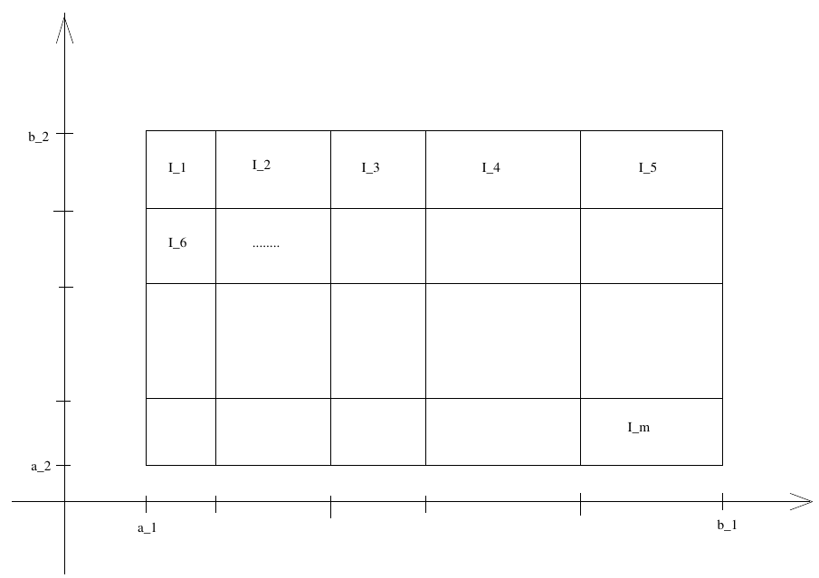 Zerlegung des Intervalls \([a_1, b_1] \times [a_2, b_2\)
Wenn die sich für beliebig feine Zerlegungen immer weiter annähern (\(s_f = S_f\)) ist die Funktion integrierbar (\(\in R(I)\)).
\[\int_I f dx := \int_I f(x) dx = s_f = S_f\]
Es gelten analog zu reellen Integralen die gleichen grundlegenden Sätze:
- Kombinationen von integrierbaren Funktionen sind wieder integrierbar (bei \(\frac{f}{g}\), wenn \(|g(x)| \geq \alpha\) für ein \(\alpha > 0\))
- Integration ist monoton (erhält Ungleichungen)
- \(C(I) \subseteq R(I)\)
10.6.1. Berechnen
Wenn die Funktion \(f\) unter dem Integral stetig ist, kann man nacheinander nach den einzelnen Parametern integrieren:
\[\int_I f(x) dx = \int_I f(x_1, \dots , x_n) d(x_1, \dots , x_n) = \int_{a_1}^{b_1} \left( \dots \int_{a_{n - 1}}^{b_{n - 1}} \left( \int_{a_n}^{b_n} f(x_1, \dots , x_n) dx_n \right) dx_{n - 1} \dots \right) dx_1\]
Beispiel: \(I := [0, \frac{\pi}{2}] \times [0, \frac{\pi}{2}]\).
\begin{align} \int_I \sin(x + y) d(x, y) &= \int_0^{\frac{\pi}{2}} \left( \int_0^{\frac{\pi}{2}} \sin(x + y) dx \right) dy \\ &= \int_0^{\frac{\pi}{2}} [-\cos(x + y)]_0^{\frac{\pi}{2}} dy \\ &= \int_0^{\frac{\pi}{2}} \cos(y) - \cos(\frac{\pi}{2} + y) dy \\ &= \int_0^{\frac{\pi}{2}} \cos(y) + \sin(y) dy \\ &= [\sin y - \cos y]_0^{\frac{\pi}{2}} \\ &= (\sin \frac{\pi}{2} - \cos \frac{\pi}{2}) - (\sin 0 - \cos 0) = (1 - 0) - (0 - 1) = 2 \end{align}10.6.2. Inhalt von Mengen
Gegeben eine Menge \(B \subseteq \mathbb{R}^n\) definiert man die charakteristische Funktion von \(B\):
\[c_B(x) := \begin{cases} 1,& x \in B\\ 0,& x \not\in B \end{cases}\]
Nun wählt man ein kompaktes Intervall \(I\), in dem \(B\) enthalten ist (\(B \subseteq I\)). Mit Zerlegungen von \(I\) kann man nun äußeren und inneren Inhalt von \(B\) bestimmen.
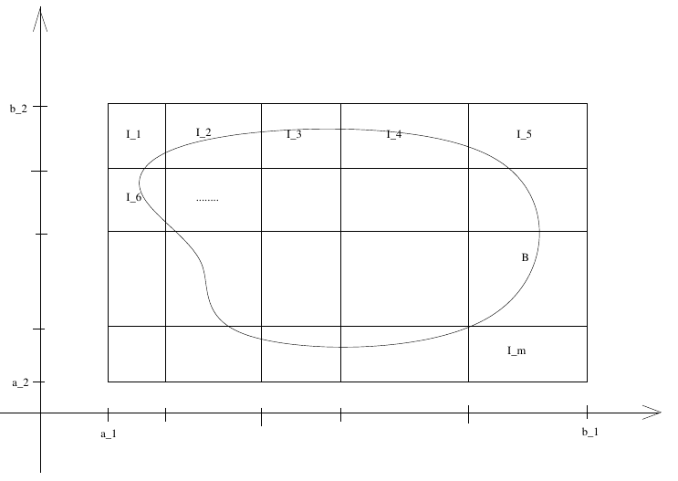 Äußerer Inhalt: Enthält alle Teilintervalle, die die Menge schneiden. Innerer Inhalt: Enthält alle Teilintervalle, die vollständig in der Menge liegen.
Dies ist gleich der entsprechenden Ober- und Untersummen der Funktion \(c_B\) über die jeweilige Zerlegung.
Die Menge \(B\) ist messbar gdw. \(c_B \in R(I)\). Dann ist der Inhalt der Menge definiert als:
\[|B| := \int_I c_B(x) dx\]
- Eigenschaften
\(A, B \subseteq \mathbb{R}^n\) messbare Mengen:
- \(A \cup B\), \(A \cap B\), \(A \setminus B\) sind messbar
- \(A \subseteq B \Rightarrow |A| \leq |B|\)
- \(|A \cup B| = |A| + |B| - |A \cap B|\)
- Über Messbaren Mengen Integrieren
Man kann Funktionen jetzt auch über anderen Mengen als nur Intervallen integrieren. Gegeben eine messbare Menge \(B\) und eine Funktion \(f : B \to \mathbb{R}\) definiert man sich hierzu
\[f_B(x) := \begin{cases} f(x),& x \in B \\ 0,& x \not\in B \end{cases}\]
Und integriert das einfach über einem Intervall mit \(B \subseteq I\).
\[\int_B f(x) dx := \int_I f_B(x) dx\]
Wenn \(f_B \in R(I)\) ist, dann ist das definiert und man schreibt auch \(f \in R(B)\).
Es gelten hier die gleichen Grundregeln wie bei anderen Integralen auch.
Zusätzlich (s. Eigenschaften oben):
\[\int_{A \cup B} fdx = \int_A fdx + \int_B fdx - \int_{A \cap B} fdx\]
Fußnoten:
Wenn man sagen will, dass etwas ab einem bestimmten Index für alle folgenden gilt, schreibt man auch für fast alle („ffa“). Also wenn \(P(n)\) eine von n abhängige Aussage ist: \[(\exists n_0 \in \mathbb{N} \: \forall n \geq n_0 : P(n)) \Leftrightarrow (P(n) \; \text{ffa} \; n \in \mathbb{N})\]
Man lässt auch manchmal das \((n \to \infty)\) bei Folgen weg, da oft klar ist was gemeint ist.